| 萩本家・母は100歳のお嬢さま | |
| 萩本悦久 | |
| (2007) | |
欽ちゃん兄弟を育てたトミの筋書きのないコント
萩本家・母は100歳のお嬢さま
萩本悦久
この電子書籍は、縦組みの底本を元に作成しました。
まえがき
母・萩本トミは、今年（２００７年）３月20日に１００歳の誕生日を迎えました。父・團治が１９７３年に亡くなり、その後は長男・功の家におりましたが、現在は私の家で暮らしています。
私・悦久は６人きょうだいの末っ子。コメディアンの萩本欽一は、ふたつ上の兄です。
誕生日の２日前。トミが１００歳になったお祝いをしようと、多忙な欽一を除くきょうだいや孫、曾孫たちが、わが家に集まりました。そして、いつものようにトミの昔話を始めました。このとき、私はずっと気になっていたことをみんなに聞いてみました。
「お母さんの若い頃の写真、持っている人いないの？」
すると、
「あら、お母さんの結婚式の写真なら、うちにあるよ」
と、長女の玲子が言いました。
トミは、大の写真ぎらい。実はこれまでに何度も、功に「トミの写真がないか」と聞いていたのですが、一枚も見つからなかったのです。それが、まさか玲子の家にあるとは思いませんでした。
「見たい、見たい」
とせがむと、
「じゃあ、送ってあげるわよ」
と、玲子。
「一枚しかない大事な写真、取りに行くから」
と言いましたが、結局は送ってもらうことにしました。
しかし、玲子が帰ったあと「やはり、取りに行けばよかった」と後悔しました。「もし、この写真がなくなったら、トミの人生がすべて消えてなくなってしまう」ように思えたからです。
翌々日。職場から家に帰ると、玲子から速達が届いていました。玲子は、トミの写真を厚紙でしっかりカバーして、折られることのないように包装して送ってくれました。私は、入学試験の合格発表を見るような気持ちで封を開け、恐る恐る写真を引き出しました。
「......ウァオ！」
写真を見た瞬間、絶句しました。トミが結婚したのは17歳。初めて見る結婚写真に、しばらく釘付けになったのです。白黒写真でしたが、〝伝説〟の通り、トミは〝お嬢様〟としての気品を保ちながら、あでやかな花嫁衣装を身にまとっていました。父の團治も、紋付き袴の凛々しい姿でおさまっていました。
私は前々から、トミが１００歳になったら「その生涯を本に書こう」と思っていました。ことあるたびに、兄や姉から「トミは子どもの頃、お嬢さまとして育った」と聞かされていましたが、実は疑っていました。私が知っているトミからは、とても想像できなかったからです。
それで、ひそかに「トミのお嬢さま姿の写真をこの目で見ることができたら、執筆を始めよう」と決めていたのです。そして、写真で見たトミは、確かに「お嬢さま」でした。
私は、改めて兄や姉たちからトミの生きざまを取材。話を聞くたびに、トミの過去を知ることができた喜びにひたりました。
トミは、普通のお母さんとはだいぶ（かなり......）違います。何しろお嬢さまとして育ちましたから、身の回りのことはいつもお手伝いさんがしてくれていました。結婚してからも、家事はもちろん、子育ても人まかせでした。たぶん、どうしていいのかわからなかったのでしょう。失敗や苦労も多かったはずですが、笑い話もたくさん生まれました。
トミの人生は、筋書きのないコントのようです。しかし、彼女自身はいつも真剣なのです。ありのままに、本当に一生懸命生きてきました。
そんなトミに育てられた私たちきょうだい６人は（実際は、誰もトミに育てられたとは思っていませんが）、それぞれの道で幸福な人生を歩んできました。それもこれも、このトミの存在があったからだと今、思っています。
私はのちに教師の道を選びましたが、トミから無言で教えられたたくさんのことは、今も原点になっています。
子どもを信じること。そして、ダメな子など、どこにもいないということ。これは私の信念でもあり、トミがその生き方を通して教えてくれたことでした。
最後になりましたが、『萩本家・母は１００歳のお嬢さま』の出版にあたり、山懸美幸さんには大変お世話になりました。また、ご協力くださった第三文明社の編集部の皆さんにも心から感謝申し上げます。
著者
２００７年９月17日
萩本家・母は１００歳のお嬢さま──目次
目次
装幀／林佳恵
カバーイラスト／ちずわまさゆき
第１章母は、ご飯を炊くことができません
庄屋のお嬢さま
母の萩本トミは、ご飯を炊くことができません。どうやって洗濯するのかも、わかりません。そして、掃除は誰かがやってくれるものと思っていました。
これは、トミが17歳で結婚したときの話です。
トミは、１９０７年（明治40年）３月20日、香川県綾歌郡羽床上村（現・綾川町）で生まれました。父は田岡勇、母はシカ。８人きょうだい（男１人、女７人）の末っ子でした。羽床上村は、北の瀬戸内海、南の讃岐山脈にはさまれた讃岐平野のやや西に位置し、讃岐米が穫れる田園地帯です。
トミの父・勇の家は、江戸時代から代々続いた庄屋でした。村一番といわれた大きな屋敷には20以上の部屋があり、家の炊事、洗濯、掃除は、たくさんのお手伝いさんがやっていました。
トミが３歳のとき、母・シカが病気で他界。勇は後妻にマサを迎えます。
やがて、マサに女の子が生まれました。マサは自分が生んだ子にはしつけをしましたが、トミに対しては、先妻に気遣ってか、いっさい家事もさせませんでした。家柄を重んじて、農家の子どもたちと遊ばせることもせず、トミの遊び相手は、もっぱらお手伝いさんたちでした。
トミは、とてもよく勉強をする子どもで、当時の女の子としては珍しく高等女学校まで行かせてもらいました。学校ではタイプライターに興味を持ち、熱心に練習してタイプの技術を習得。この当時、香川県でタイプライターを打てる人は３人しかいなくて、そのうちの１人がトミでした。
このような環境で育ってしまったトミのことを、父の勇は「厳しい世の中のことを体験しておかなければ、将来困ることになる」と、心配もしていました。そして、高等女学校を卒業後、親元から離れたところに就職させることに決めました。
トミは、勇の知り合いが経営している大阪の商事会社に勤めることになったのです。
しかし、今まで何不自由なく過ごしてきたトミが、未知の大阪でひとり暮らしなどできるはずがない、と思った勇は、トミの身の回りをすべてやるお手伝いさんも一緒に行かせることにしました。
というわけで、会社で仕事をして帰れば、家では上げ膳据え膳という、相変わらずの「お嬢さま」の生活を続けることになりました。
それでも、親元を離れた生活になじめず、１年で実家に戻りました。このあと、團治と出会うことになるのです。
ここで少し、父・團治のことをお話しします。
團治は１９００年（明治33年）８月20日、香川県高松市で生まれました。男４人きょうだいの三男で、おとなしく利発な少年でした。
尋常小学校を出るとすぐ、大阪の薬屋へ丁稚奉公に行きます。15歳で実家に戻ってからは家業のまんじゅう屋を手伝っていましたが、大阪のことが忘れられなくて、17歳のときに知り合いを頼って再び大阪に出て行きます。そして、株屋の会社に勤めるようになりました。当時は株が大流行しており、株で大もうけした人が、たくさんいたようです。
知恵が働き、先見性のある團治は、すぐに株の仕手戦に参加。若くして、相当の利益を得るようになりました。しかし、浮き沈みの激しい株の世界。最後は失敗して身を引くことになり、再び高松の実家に戻ることになったのです。
実家のまんじゅう屋には、跡取りの兄がいました。株の世界から見るともうけの少ないまんじゅう屋にいや気がさした團治は、再び一旗あげようと上京。父親の知り合いで、東京・上野にある根岸商店で、住み込みとして働くことになりました。
根岸商店は、ハキモノとカメラなどを販売していました。以前からカメラに興味があったこともあって、やがてカメラの販売をまかされることになり、ここから團治のカメラ人生は始まるのです。
17歳と24歳の夫婦
さて、團治は根岸商店で働いているとき、１９２３年（大正12年）の関東大震災に遭います。そして翌年、トミと出会います。２人は知人を介して高松でお見合いをし、同じ香川県出身ということもあって双方の親も賛成。すぐ結婚が決まりました。結婚式は、高松市内で盛大に行われました。トミは17歳、團治は24歳でした。
実は、先日トミに、
「どうして、お父さんと結婚したの？」
と聞いてみました。トミはしばらく考えて、
「いろいろあったわね」
と、ひと言。かつて長男の功から聞いた話を思い出して、
「お父さんが、カメラ屋だったから？」
と聞くと、
「かっこよかったからね」
と、トミ。私は続けて、
「美男子だったから？」
とも聞いてみました。トミは少しほほえみ、
「そうだね」
と言いました。
お嬢さまの目には、当時の團治が、ハイカラでハンサムボーイに映っていたようです。
たくさんの持参金を持たせてもらって結婚したトミは、團治とともに東京で新婚生活を始めました。ところが、１日目から家は大騒動になりました。
團治が仕事から帰ってくると、トミは部屋の電気もつけずに居間で正座をしていたのです。「お帰りなさい」のひと言も言わないトミに、團治は少しムッとしながらも、「お嬢さまだからしかたがない」と気を取り直しました。そして、
「ご飯の前に、風呂に行ってくるぞ！」
と強い口調で言いました。トミは、返事をしません。その様子を不思議に思って、
「どこか、具合でも悪いのか？」
と聞いても、ただ首を横に振るだけでした。いっこうに立ち上がる気配のないトミの態度に「おかしい」と思いながら、ふと台所をのぞいてみると、ご飯をつくった気配がありません。念のためにお釜をのぞいて見ると、買ったときの新品のままでした。
「どうして、ご飯が炊けてないんだ！」
團治があきれながら怒ると、トミは言うのです。
「私は、いままでご飯を炊いたことがありません。あなたが炊いてくれると思って、こうして待っておりました」
と。團治は「ここまで、徹底したお嬢さまだったとは......」と愕然とし、「えらい人と結婚してしまった」と後悔しました。そして、その日から、ご飯の炊き方、煮炊きの仕方、掃除のやり方などを、まるで子どもに教えるように手取り足取りトミに教えていきました。
親から何もしつけられず、お嬢さまとして育ったトミ。結婚生活では、今まで経験したこともない場面に次々と出合い、毎日が困惑の連続でした。
それでも、ぐちひとつこぼさず、お嬢さまとしてのプライドも捨てず、ただひたむきに、自分の生き方を貫き通したのです。
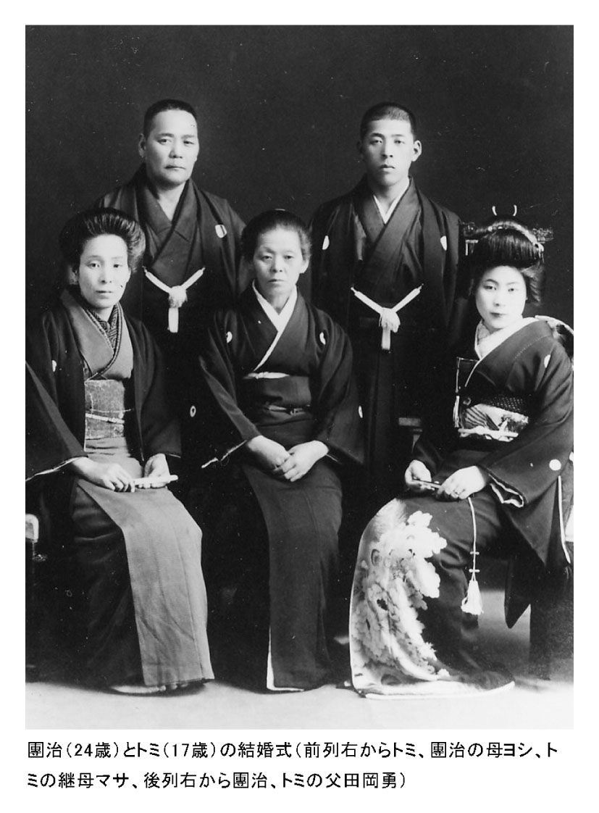
第２章家事も育児も、子どもたちがした
２人の幼児をかかえ、途方にくれる
トミは生涯で、９人の子どもを生みました。戦争中だったこともあって３人は幼くして亡くなり、現在の６人きょうだいになりました。
上から紹介しますと、長男は功（１９２７年／昭和２年生まれ）。戦争中に警察官の職に就き、戦後は父・團治のカメラ会社を手伝うようになりました。のちに、二女・圭子の夫が社長を務める「サカイ薬品」の会長になりました。
長女・玲子（１９３０年／昭和５年生まれ）は、女学校時代は学徒動員で毎日、工場に働きに出ていました。のちに親戚の萩本光昭と結婚。長い間、朝日生命保険に勤務し、現在も会社の信頼が厚く仕事を続けています。
二男・安是（１９３２年／昭和７年生まれ）は、早稲田大学理工学部を卒業後に（株）トーメンに入社。定年まで勤め上げました。
二女・圭子（１９３７年／昭和12年生まれ）は、埼玉県立浦和第一女子高等学校を卒業後にＯＬとなり、その後、河嶋弘道氏と結婚。昨２００６年に夫が亡くなり、現在は娘夫妻と孫たちに囲まれて生活をしています。
三男・欽一（１９４１年／昭和16年生まれ）は駒込高校を卒業したあと、ご存じのようにコメディアンになりました。
そして、末っ子で四男の私・悦久（１９４３年／昭和18年生まれ）は東京学芸大学を卒業後、東京都千代田区立番町小学校教諭、東京創価小学校校長などを経て、現在は創価教育研究所の所長をやっています。
私も欽一も、長男の功を「お兄ちゃん」、長女の玲子を「お姉ちゃん」、二男の安是を「やっちゃん」、二女の圭子を「けいこちゃん」と呼んでいました。欽一は「きんちゃん」、私は「よっちゃん」と呼ばれていました。
私と欽一は、２人とも東京・上野の南稲荷町の家で生まれました。
南稲荷町は、いかにも下町という風情のある場所で、家々が密集していました。家はＴ字路の角地にあり、道を隔てた西側には下谷神社、反対側の角には、鏡を製造している家内工業の家がありました。周辺は、平屋の町工場か、２階家ならば１階が工場で２階が住まい、という家がほとんどだったのです。
大きな屋敷で育ってきたトミは、この下町の空気になじむことができず、近所づきあいを、ほとんどしませんでした。トミが近所のお母さんたちと井戸端会議をしている姿などは、一度も見たことがありませんでした。
この頃、日本は太平洋戦争の真っただ中。東京は日増しに空襲が激しくなってきたので、父・團治、長男・功、長女・玲子だけが南稲荷町に残り、母・トミと、残りのきょうだい４人は、44年（昭和19年）の暮れに埼玉県の浦和市に疎開しました。翌45年の３月10日には東京大空襲があり、多くの家々が焼けてしまいましたが、浦和市にいた私たちと南稲荷町の家は、幸いなことに戦災を免れました。
当時、團治は身体検査で兵役を免れ、南稲荷町で「萩本商会」というカメラ屋を経営していました。戦争中は物不足と不景気で、カメラ製造会社は次々に倒産。そんななか、もうすぐ戦争が終わると見込んだ團治は、倒産したカメラ製造会社からレンズやボディーなどのカメラ部品を、大量に安く買い集めていました。そして、戦争が終わると、この集めた部品を使ってカメラの製造・販売を始め、大もうけすることになるのです。
さて、疎開先の浦和の家は洋風の建物で、風呂もあり、当時としてはかなり立派でした。引っ越したとき、二男・安是は小学校６年生、二女・圭子は１年生。功には会社を継がせ、安是は東大に行かせて......など、團治は子どもたちの将来に対して、いろいろな構想を持っていたようでした。そして、子どもたちをどこの学校に行かせるのかということも、自分ひとりで決めていました。
当時、小学生が電車で学校に通うことなど考えられませんでしたが、安是と圭子は團治の命令で浦和から京浜東北線に乗り、上野の南稲荷町の学校まで通っていました。なぜ東京の学校にこだわったのか。今となっては、わかりません。
トミは、夫の決めたことには、いっさい口出ししませんから、大変なのは子どもたちでした。電車の便が悪いため、いつもぎゅうぎゅうづめの満員電車。安是は小さな圭子を、必死で守りながら毎日通学していました。
昼間、浦和の家に残っているのはトミ、３歳の欽一、まもなく２歳になる私の３人です。トミは２人の幼児をかかえ、どうしたらいいのか、途方にくれていました。というのも、疎開する前は、私と欽一の世話はすべて、長女の玲子がやっていたからです。
トミは、炊事、洗濯、掃除は夫である團治に教わっていたものの、母親としての役割を身につけることはありませんでした。
育ての母は、長女の玲子
ということで、浦和で幼い私と欽一を育てるには、長女の玲子が家にいることが不可欠でした。
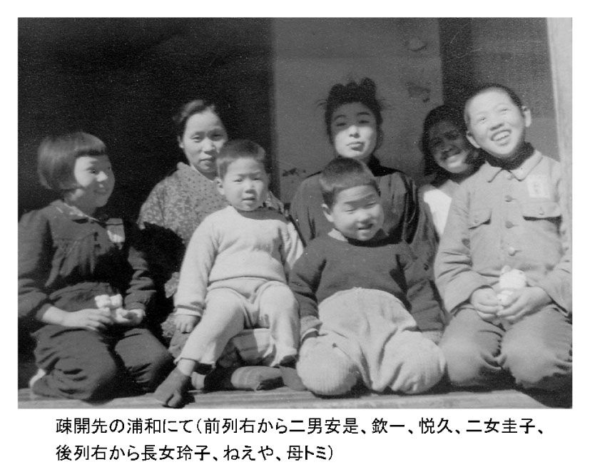
そのことに気がついたトミは玲子を呼び寄せ、私たちと一緒に生活をすることになりました。玲子が南稲荷町に残っていたときは、團治から生活費を預かって浦和に届ける役目をしていましたが、今度は生活費をもらうために南稲荷町に行くことになりました。
トミは、外出というものをほとんどしません。「外に行くと、世間の人たちが自分を見る。見られたときに、いい加減な姿は見られたくないから」というお嬢さまの気質が理由です。もちろん、買い物にも行きませんから、玲子は南稲荷町からの帰り、トミの代わりに浦和駅前で買い物をして、家に戻れば私と欽一の世話。まだ10代の前半でしたが、玲子は立派なお母さんをしていました。
幼稚園の送り迎えをしてくれたのも、玲子でした。今のように、幼稚園バスなどはありませんでしたから、手を引いて連れて行ってくれました。
欽一が七五三を迎えたときも玲子が一緒にお宮参りをし、近くの写真館で記念写真を撮りました。私のときも同じでした。七五三の記念写真で横に立っているのは、トミではなく玲子なのです。
私も欽一も、小学校は浦和の高砂小学校でした。市立の学校ですから、みんな私服です。当時は、子どもの服装を見ると、その家の暮らしぶりが、わかったものでした。トミ自身は「着ていく服がない」と言って外出しませんでしたが、子どもには恥をかかせないようにと、入学式のときには真新しい洋服を用意してくれました。
とはいえ、入学式の付き添いも、トミではなく玲子でした。私は何の違和感もなく受け入れましたが、玲子はまだ19歳。病気でもないのに、母親の代わりに弟の入学式に付き添うなんて......と、いやな思いをしていたことでしょう。もしかすると、他のお母さんから、「若いお母さんだこと」と思われていたかもしれませんが。
この入学式から、浦和を離れるまでの２年間。とうとう、トミは一度も小学校に顔を出しませんでした。私も欽一も、学校からのお便りは玲子に渡し、保護者会や授業参観日も、すべて玲子が来てくれました。
トミに、私が小さいときの様子を聞いても何も覚えていませんが、玲子は苦労しただけあって克明に覚えています。終戦間際にはミルクの配給もなくなり、重湯で育ててくれたことなども話してくれました。
正真正銘、私と欽一の育ての親は、玲子だったのです。衣服のつくろいものも、玲子がすべてやってくれました。
「お母さんは、何もしない人だったのよ。靴下に穴があいたって縫い方もわからないものだから、押し入れの中にどんどん詰め込んでおくの。仕方がないから、私が友達のお母さんから縫い方を習って、あんたたちにはかせたのよ」
玲子は少しあきれながらも、そう言います。ですから、今も玲子には心から感謝しています。
トミは、家事もほとんどできませんでした。そのため、私たちきょうだいは役割を決め、家事を分担していました。
浦和の家には木の風呂があり、風呂沸かしは安是と圭子の担当でした。水道がないので、台所に行って手作業でポンプを上下に動かし、井戸水をくみ上げます。そのあと、バケツに入れた水を風呂桶に入れるのですが、いっぱいになるまでには30回も往復しなくてはなりません。
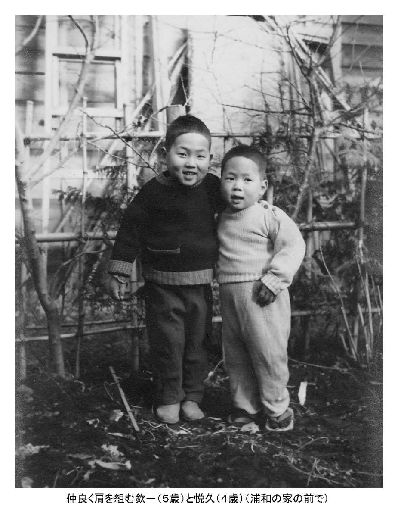
今のようにプロパンガスなどもありませんから、風呂桶に水を入れたあとは、風呂場の外から薪で風呂を沸かさなければいけません。その薪も、林から木を拾ってきてから、適当な長さにのこぎりで切って薪割りをして、使いました。大変な力仕事でした。
どこの家でもそうでしたが、電気は、電球の明かりをつけるためと、ラジオを聴くためにありました。電化製品などは、ひとつもありませんでした。冷蔵庫もこの頃は木製で、ドアが２つあるタイプでした。上の段に氷を入れると、下の段にその氷の冷気が下がって中のものが冷えるしくみです。そのため、冷やしたいものは下に入れました。
この冷蔵庫は、團治が買って浦和の家に届けてくれたものです。最初は珍しくて使っていましたが、次第に使いにくいことがわかってきました。中のものを冷やすためには、常に氷を補充しなくてはいけなかったからです。しかも、あまり冷えないので、魚や肉などの生鮮食品は、こまめに買いに行かなくてはなりませんでした。そして、私と欽一は、もっぱらこの買い物が役目でした。
私と欽一が学校から帰ると、トミは「豚の細切れ、２００グラム買ってきてちょうだい」などと言って、お金を渡します。私たちは忘れないようにするために、「豚の細切れ」「２００グラム」と何度もつぶやきながら、お店に行ったものでした。
トミはいつも、少し多めにお金を持たせたので、お店ではおつりをくれます。この買い物を通して、私たちに算数の勉強をさせていたのかもしれません。また、記憶することも訓練されたように思います。
太いネズミのしっぽ
私が、小学校１年生のときのことです。学芸会で、「鈴をつけたネコ」という劇をやることになりました。ネズミたちが台所のおいしいごちそうを食べるために、ネコが来たらわかるように、ネコが寝ているあいだに首に鈴をつけるという物語でした。
私は、ネズミ役のひとりに選ばれ、衣装はそれぞれの家庭で用意することになっていました。今の学校でしたら、保護者に衣装を用意してもらう場合は、図入りで材料や作り方などをプリントして渡すところですが、当時は、先生が口頭で子どもたちに伝えるだけです。そのため、子どもたちは皆、真剣に先生の話を聞いていました。
家に帰ってすぐ、トミに、
「ネズミのしっぽを作って！」
と、お願いすると、
「作ってあげるけど、ネズミのしっぽって、どうやって作るのかな？」
と、不安になるような返事。裁縫が不得手で、しかも世の中のこともよくわかっていないトミは、どうやって作ったらいいのか、相当悩んだようでした。
学校から帰ると、
「しっぽできた？」
と毎日せがむのですが、いっこうに作ろうとはしません。横着していたのではなく、作り方がわからなかったのです。そして、とうとう本番の３日前になってしまいました。
「友達はみんな作ってもらったのに、僕だけしっぽがない～！」
私は、大泣きしました。トミは私の涙に弱く、泣けば腰をあげてくれます。このときも、押し入れから白い布を出してきました。しばらくして、構想がまとまったらしく、トミはやっと細長い袋を作り始めました。私は、どういうしっぽが出来るのか心配で心配で、付きっきりで、出来上がりを見守りました。
「ほら、出来た！」
トミは出来上がった細長い袋に綿を入れ、出来上がったばかりのしっぽを私に手渡しました。
「つけてごらん」
トミは得意げな顔をして言いましたが、そのしっぽを手にしたとき、また泣いてしまいました。垂れ下がったしっぽは、ネズミというよりも、キツネのしっぽのようだったからです。
「こんなの、ネズミのしっぽじゃないよ～。キツネのしっぽだよ～」
すると、そばで見ていた玲子が、
「お母さん、しっぽが垂れ下がっているからいけないのよ。針金入れてピーンとしたら？」
と言いました。トミは、
「そうだね」
とうなずきながら、押し入れから針金を出してきて、しっぽの中に入れる作業を始めました。
玲子は手を出そうとしましたが、それではトミが自立できなくなると思い、見守ることにしていたようです。
「さあ、これでどう？」
今度は少し反り返って、ネズミのしっぽらしくなりましたが、太さは変わりません。
「いやだ！ このしっぽ、太いんだもん」
私は、また泣きました。トミは困った顔をしましたが、玲子が横から、
「よっちゃん、あの大きな市民会館の舞台では、このくらい太くないと目立たないんだよ」
と言ってくれました。
「そうそう、お姉ちゃんの言う通りだよ」
トミは、玲子の助け舟に感謝しているようでした。私は、トミよりも、育ての親である玲子の言うことをよく聞いていましたので、
「お姉ちゃんが言うなら仕方がない」
とあきらめました。
本番の学芸会。いつものようにトミは「着ていくものがない」といって見に来てくれませんでしたが、玲子は来てくれました。
「今日の劇で、よっちゃんのネズミが一番上手だったよ。なんといっても、あの、しっぽが強そうなネズミに見えたよ」
夕食のときに玲子が言うと、
「そうだろう、お母さんが作ったんだもの」
と、自慢気に言うのでした。
こうしてトミはいつも、玲子に助けられながら、一応、母親をやってきました。私たちきょうだいが、自然と家事や育児をするようになったのをいいことに、トミは相変わらず何もしませんでした。
しかし、誰もトミをうらみませんでしたし、不満をぶつけることもありませんでした。反対に、自分たちが何かしてあげないとトミがダメになってしまうのではないか、という気持ちになっていたのです。そういう意味では、子どもたちがトミを育てていたと言えるのです。
交通博物館と児童劇団
私も欽一も、トミに「どこかに連れてって」と、ねだったことはありません。「ねだっても、どうせ家から出ないことがわかっていたからです。
トミの代わりに、遊びに連れていってくれたのは、二男の安是です。安是はアルバイトで学費をかせぎながら、自分のかせいだお金で、私たちをいろいろなところに連れて行ってくれました。本当に大変だったと思いますが、私たちはいつも、ワクワクしながら出かける日を心待ちにしていました。
よく連れて行ってくれたのは、東京の秋葉原にあった「交通博物館」です。
このなかで一番楽しかったのは、電気で動く模型電車のコーナーでした。20畳くらいのスペースに、いろいろな型の電車が走っていて、ずっと見ていると自分が運転手になった気分になりました。このコーナーに行くと１時間近くも離れず、動く電車を追い続けていました。機械に詳しい安是が横で解説してくれるのを聞くのも、楽しみでした。
もう１カ所、よく連れて行ってくれたのが「児童劇」でした。演じるのは大人ですが、お客さんのほとんどは親子連れです。毎回、見に行く会場が違っていたのは、安是がどこかで一生懸命情報を手に入れてくれたからだと思います。
たくさん見た芝居のなかで、今も記憶に残っているのは『宝島』です。偶然、宝島の地図を手に入れた少年ジムが、リプシー先生やトレローニさんと一緒に宝島に行く物語で、舞台の真ん中には大きな海賊船がありました。いよいよ航海に出る場面になると、船首部分が下手へと向き、まるで海の上に浮かんでいるような動きをしました。すごいセットだと、子どもながらにも圧倒されてしまいました。実際にこの目で見る舞台は、私たちの心に深く深く焼き付きました。
以来、私は舞台の魅力に取り付かれるようになりました。教師になって、クラスの子どもたちが劇をするときは、自分で脚本を書いて、舞台装置を考え、演出もしました。舞台装置を考えるときは、いつも、あの宝島のセットが浮かんできました。欽一がのちに浅草の舞台を目指すようになったのも、このときの記憶が潜在的に影響していたに違いありません。
残念だったのは、家に帰ってトミに「楽しかった」と言っても「ああ、そうかい」のひと言で終わってしまったことです。「うーん、それで？」「それから、どうなったの？」と聞いてくれれば、どんどん話をしたのでしょうが、会話が長く続くことはありませんでした。
大事な着物が、質屋に消えた
父・團治のカメラ会社は、しばらくは順調に伸び、終戦後は、銀座、日本橋、神田、上野と４つの店舗を持つまでに拡大していました。長男の功も仕事を手伝うようになり、浦和の家にはいっとき、「ねえや」や「ばあや」もいて、私も欽一も「お坊ちゃま」と呼ばれていました。しかし、次第に経営が怪しくなっていき、私が小学校２年生のときに会社は倒産しました。
当時、国内では大型の二眼レフのカメラが主流でした。価格も、大学出身の初任給の20倍に当たる６万円と高額でした。そんなとき、團治は35ミリフィルムを使った小型カメラ「ダン35」を開発します。価格も６０００円と二眼レフより安く、画期的なカメラでした。そして、財産をすべて継ぎ込んで長野県諏訪市に工場を建設しました。しかし、やはり時代を先取りしすぎたのでしょう。売れ行きが不振で、会社の経営を圧迫し始めました。
やがて、諏訪の工場を閉鎖。銀座や日本橋の店も手放し、最後は上野の１店だけがかろうじて残りました。それでも多大の借金が残り、経営が破綻したのです。
團治は「やり直して、会社を再興してみせる」という自信があったようで、トミにも家族にもしばらくは、何も言いませんでした。しかし、次第に送金が滞るようになっていき、まず玲子に告げ、それから家族の知るところとなるのです。
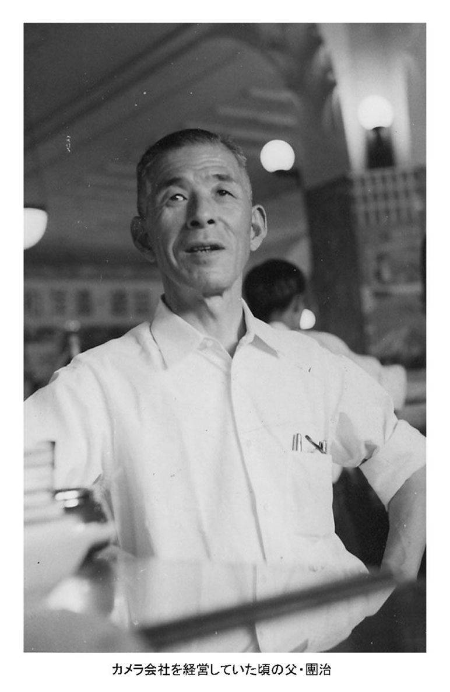
幼い私や欽一は、そんな家庭の事情など全く知らず、浦和では相変わらず毎日元気に過ごしていました。何となく違和感を覚えるようになったのは、「ねえや」「ばあや」と呼んでいた２人のお手伝いさんが、いなくなったときでした。
特に、若いお姉さんのような「ねえや」がいなくなったときは、とてもさみしかったことを覚えています。よく本を読んでくれたり、お話をしてくれたからです。
どんなお話だったかは忘れましたが、ねえやが読んでくれた「まだまだ、なかなか、びっちびち」というフレーズだけは、いまだに私の脳裏から離れません。
そのあと、お琴などの、普段あまり使われなかった道具や装飾品も、少しずつ家からなくなっていきました。
あるとき、トミが桐ダンスの前で風呂敷を広げ、引き出しの中をのぞき込んでいる姿を見ました。そのときの顔が、いつもと違う暗い顔だったので、「何をしているんだろう」と心配しました。あとでわかったことですが、結婚したときに持ってきた大事な着物を、質屋に入れるために選んでいたのでした。
トミは、この着物を手放したら二度と戻ってこないことを覚悟していたようです。きっと、自分の子どもを嫁にやるような気持ちだったことでしょう。この着物だけは自分で近くの質屋に持って行き、そのお金で、お米と夕飯のおかずを買って帰りました。
トミは、どんなにお金がなくてお米が買えなくても、決して弱音は吐きませんでした。「わが家は貧乏ではない」と思い続けていましたし、子どもたちにひもじい思いだけは絶対にさせない、という信念を持っていました。
しかし、食卓は一変しました。おかゆが主食になり、しかも米よりも水の多い重湯のようなおかゆでした。戦争中によく食べたすいとんも、ときどき出ました。
おかずは、納豆、豆腐、煮物が多かったのですが、これには理由がありました。豆腐屋さんが毎日、「プー、プー」とラッパをふきながら自転車で売りに来ていましたし、八百屋さんもときどき、リヤカーをひいて野菜を売りにきていたのです。外出をしないトミにとっては、家にいて買える豆腐や野菜は、大助かりでした。
それでも「プープー」の音が聞こえてくると、「よっちゃん、納豆と豆腐と油揚げ買ってきて」と、外によく買いに行かされました。魚や乾物類は玲子が買ってきてくれましたが、次第に魚はひとり１匹から半切れになっていきました。
お金を取ってくる策をさずける
私が小学３年生の夏に浦和の家を手放し、再び家族は南稲荷町に戻りました。貧乏ではありましたが、トミには知恵がありました。
近くにあった下谷神社では、毎年、盛大に夏祭りが行われ、そのたびに「おみこし、かついでおいで！」と、欽一に言いました。
「よっちゃんも連れて行きなさい」
そう言い付けるのも、いつものことでした。
夏祭りの時期、町内会の各家々では、玄関の外に提灯としめ飾りをかけて祭りを盛り上げていました。トミが「おみこし、かついでおいで」と言うのは、決してお祭りが好きだったからではありません。人が集まるところがきらいなトミが、お祭りなんて行くはずがありません。別の理由があって、私たちを行かせていたのでした。
「おみこしをかついだ子どもは、ごほうびがもらえるからね。必ず、もらってくるんだよ」
目的は、ごほうびだったのです。お祭りでも子どもたちに小遣いをあげられない、トミの苦肉の策だったのかもしれません。
町中を「ワッショイ、ワッショイ」と練り歩き、へとへとになって家に帰ってくると、ねぎらいの言葉をかけるよりもまず、
「ごほうびに、何もらったの？」
と聞きます。そのあとに、
「おみこしかついで、よかったでしょ」
と言ってのけるトミでした。
お祭りのときの縁日には、二女の圭子が連れて行ってくれました。トミに頼まれたわけでもなく、自分から連れて行ってくれたのです。圭子は、どんなときもやさしい姉でした。
神社では、２月３日の節分のときは豆まきを行います。このときも、トミは、
「早く、豆まき行っておいで！」
と、せきたてました。
この日は、地元の人たちだけでなく、他のところからも多くの人たちが集まりました。
能舞台の回廊から紋付き袴の年男が豆をまくのですが、ミカンやお菓子、そして白い半紙に包まれたお金も投げてくれるのです。
「いいかい、後ろの方にいちゃいけないよ。投げたお金が、届かないからね。真ん中もだめ。背の高い大人の人に、全部取られちゃうだろ。つぶされると危ないし。だから、一番前がいいんだよ。後ろから押されたら、廊下の下にもぐっちゃいな。それから、大きい声で、下から〝おじさん！〟って言うんだよ」
普段は口数の少ないトミも、このときばかりは真剣な顔をして、お金を取ってくる策をさずけます。それでも、そうそう取ってこれるものでもなく、ミカンぐらいしか持って帰れないときは、すごくがっかりしていました。
母が、初めて学校に来てくれた
私はその後、台東区立西町小学校を卒業。地元の中学校に入学しますが、すぐあとの４月中旬、東京都文京区に引っ越すことになりました。南稲荷町の家は、借金のかたに人手に渡りました。
父の團治は、家族の生活のことまで気が回らない人です。私たちと一緒に住むことはなく、身の回りの世話をしていた女性と一緒に、東京の浅草で暮らしていました。
私は、せっかく入学した中学校もすぐに転校しなくてはならず、転校初日には手続きが必要でした。いつもならば長女の玲子が付き添ってくれていましたが、結婚していて家にはいませんでした。
「明日、誰か。よっちゃんの学校に一緒に行ってあげてくれない？」
と、トミ。
「保護者なんだから、お母さんが行くのが当たり前でしょ」と、二女の圭子。
「だって、着て行く服がないんだよ」
「誰も見ていないから、大丈夫よ」
「お前たち、何を考えているんだい。校長先生に会うんだよ。私に恥をかかす気かい」
「転校するのはよっちゃんなんだし、お母さんのことなんか校長先生は見てないってば」
私は、またいつものことが始まったと思っていましたが、さすがにひとりきりで学校に行く勇気はありませんでした。
転校当日。不安そうな私の顔を見たトミは、一大決心。「仕方がないね」と、出かける準備を始めたのです。しかし、それはそれは時間がかかりました。何を着ていくのかが、決まらなかったからです。案の定、学校に着いたときは、すでに授業が始まっていました。
トミが、恐る恐る事務室に声をかけると、教頭先生が玄関まで出てきてくれました。
「こちらの学校でお世話になります、萩本悦久です。どうぞよろしくお願いします」
トミはそう言うなり、持ってきた転校手続きの書類を教頭先生に渡し、
「私は、これで失礼します」
と、ひとりでさっさと帰ってしまいました。
そういう母であることに慣れている私は何とも思いませんでしたが、教頭先生は「何という親だろう」と、いぶかったに違いありません。トミにとっては、私をこの中学校に入れることよりも、「校長先生に会いたくない」という気持ちの方が優先していたのです。
しかし、とにかくにも、初めて子どもの学校に行ったわけです。そして、この日を最後に、いかなる行事があっても学校に行くことはありませんでした。ですから、トミにとっても私にとっても、記念すべき特別な日になりました。
今考えると、私たちきょうだいはトミのおかげで自立できたのかも、と思います。進路もすべて自分たちで決めましたし、何でも自分で決める習慣がつきました。そう考えると、トミは意外に子育てが上手だったと思えるのです。
第３章欽ちゃんは、私のお腹から生まれたんだよ
母が、欽ちゃんをたたいた
さて、この章では、コメディアンの道を選んだ欽一とトミとのエピソードを中心に、お話ししようと思います。
欽一は、とても成績のいい子どもでしたが、勉強よりも遊ぶことの方が優先していました。小学校から帰ってきても、私のようにすぐ給食袋などを渡さないため、夜の食事のときに、トミからいつも言われていました。
「よっちゃんは家に帰ったら、すぐ給食袋を出して几帳面なのに、欽ちゃんは、しょうがない子だね」と。
トミが言った私の几帳面さは、いまだに続いています。このあとも何度も言われてきたことで、いつの間にか、私の心に刷り込みされてしまったのかもしれません。
あるとき、欽一が遊んで帰ってくると、トミは待ちかまえていたように言いました。
「欽ちゃん、おしょうゆ買ってきてちょうだい」
母親代わりだった長女の玲子が結婚して家を出てから、トミは欽一にお使いを頼むようになっていました。
「いやだ！」
いつもならすぐ行くのに、そのときは何かやりたいことがあったのでしょう。珍しく、いやがりました。
「お願いだから、行ってちょうだい」
とトミが再び頼むと、
「しょうがないなあ、じゃあ、行くよ」
そう、欽一が言ったときでした。バシッ、と欽一の頬にトミの平手が飛んできました。
欽一はビックリしました。今までトミにたたかれたことなどなかったし、ちゃんと「行くよ」と言ったあとだったからです。そばにいた私も、ビックリしました。トミが子どもをたたく姿など、今まで見たことはなかったのです。
トミは、こう言いました。
「欽ちゃん、どうして１回目で、〝はい〟と言わなかったの。２回目、３回目に頼まれて、いやいやお使いに行ってくれても、お母さん、ひとつもうれしくないよ。頼まれたら、１回で〝はい〟と言いなさい」
この日から、欽一も私も、トミに何か頼まれたときは、すぐに「はい！」と言うようになりました。
めったに見ることのできないトミの厳しい姿でした。
世渡り上手
南稲荷町の家の前は、小型のトラックがやっと通れるほどの狭い道になっていました。あまり車が入ってくることもなく、子どもたちのかっこうの遊び場でした。このあたりの子どもたちはそこで、めんこ、ベーゴマ、ビー玉などをして遊んでいました。
欽一が小学校から帰ってくると、すぐ近所の子が呼びに来ます。
「欽ちゃん、遊ぼ！」
なぜか「よっちゃん、遊ぼ！」と、私のことは誘ってくれません。それもそのはずです。私は泣き虫で、一緒に遊んでもおもしろくなかったのです。それで、いつも欽一のうしろにくっついて、遊びに行っていました。
ガキ大将は、
「よっちゃんはすぐ泣くから、入れてあげない」
と、私を仲間に入れてくれないこともありました。そんなときは泣きながら帰って、トミに言いつけました。
しかし、トミは下町のお母さんみたいに、
「あんたたち、うちの子、入れてあげなきゃだめでしょ！」
などとは言いません。トミには、そういう上品ではない言葉を発することなど、で
きませんでした。そしていつも、
「すぐ、欽ちゃんを呼んでらっしゃい」
と私に呼びに行かせました。
そのたび、欽一は「またか」と思ったようですが、言うことをきかないと晩ご飯のおかずに影響してしまいます。それで、仕方なくいったん家に帰るのです。
「欽ちゃん、あなたがいれば、よっちゃんが仲間に入れてもらえないはずないわよね。お願いね」
とトミに頼りにされてしまう欽一は、一応私を遊び場までは連れて行きます。でも、「よっちゃんを入れてあげて」
とはガキ大将に言いません。遊びの内容を変えるように、もっていくのです。
「さっきから、缶けり、ずいぶんやったね」
と、欽一。
「そうだなあ。別のことやろうか」
「そう言うだろうと思ったんだ」
「うーん、今度はビー玉やろうか」
「いいねえ。ぼくもそう思ったんだ。ビー玉、いいよね～」
「この前、ベーゴマ負けたから、ベーゴマにするか」
「いいね、いいね。やはり、ベーゴマがいいよね」
こんな調子で、欽一はさからわず相手をたてながら、弟の私を遊びの仲間に入れることに成功するのでした。
欽一は、近所の子と決して、けんかをすることがありませんでした。芸能界でも発揮されている世渡り上手な性格は、すでにこの頃から芽生えていたようです。こんな欽一の性格を、トミは見抜いていたのかもしれません。というより、頼りにならないお嬢さまの母を持ってしまった欽一の、精いっぱいの知恵だったのでしょう。
有り金はたいて「めんこを買っておいで！」
ところで、遊び場には縄張りがありました。ベーゴマをやるときは、ベーゴマの強い子の家の前。めんこをやるときは、めんこをたくさん持っている子の家の前、というように、その遊びで強い子の家の前が遊び場になりました。
サッカーの試合でいえば、ホームとアウェーということになるのでしょうか。ホームで遊べば、家にお母さんがいます。何かあればすぐ飛び出してきてくれるわけで、それだけですごい応援になるわけです。
その点、トミは「欽ちゃんのお母さんって、どんな人？」と聞かれるくらい、存在感がありませんでした。そんなわけで、欽一と私は、いつもアウェーで遊ぶことになりました。
めんこの遊びをするとき、子どもたちは自分のめんこを持ってきます。
その日は、欽一がずいぶん勝っていました。とはいえ、いつも〝うそんこ〟でやっていましたから、最後に勝っためんこは返します。
負けていたホームの子は、途中家にめんこを取りに行きました。そして、これまでの倍のめんこを持って、
「欽ちゃん、〝ほんき〟しよう」
と言ったのです。
〝ほんき〟というのは、取ったら返さないということです。その子は家に入ったとき、お母さんに何かアドバイスをもらってきたようです。これがホームの強みです。
勝っていた欽一は、
「いいよ」
と言って、〝うそんこ〟で勝っためんこを返しました。そして、いよいよ〝ほんき〟が始まり、その子は急に強くなりました。これも、その子のお母さんの入れ知恵だったのかもしれません。
とうとう、缶カラいっぱいあった欽一のめんこは、底をついてしまいました。私だったら泣いて帰ったと思いますが、欽一は、
「あーあ、負けちゃった」
と案外せいせいしています。私は、絶対〝ほんき〟はしませんでしたが、欽一は、競馬好きな父・團治の血を引いてしまったのか、とても負けずぎらいでした。勝負師的なところが、小さい頃からありました。
「勝負は、勝つときもあれば負けるときもある」
これが、欽一なりの哲学でした。
欽一は、〝ほんき〟のめんこで負けたことをトミに言うつもりはありませんでした。からっぽになった缶カラをトミに見つからないようにしていたのですが、私がトミに言ってしまいました。
「欽ちゃん、〝ほんき〟で、めんこ全部とられちゃったよ」
欽一は「よっちゃん、よけいなこと言うなよ」という顔をしましたが、トミは突然怒ったような顔をしてタンスのところに行き、引き出しから財布を持ってきました。
「欽ちゃん、めんこなんかで負けるんじゃないよ。このお金でめんこ買っておいで！ そして、もう一回やって取り返しておいで」
そう言って、財布に入っていたお金を全部、欽一に渡してしまいました。
普段、「お金がない、お金がない」と言っていたトミが有り金を全部はたくなんて、よっぽどのことです。お金がなくなることよりも、負けることの方がよほどくやしかったのだろうと思います。
欽一はそのお金で少しめんこは買いましたが、二度と〝ほんき〟はしませんでした。
「ついてないときは、やらない」
これも、欽一の哲学だったようです。
そして、トミには「勝ったよ」と言って、ほとんどのお金を返しました。トミは特に詮索もせず、
「ああ、そうかい」
と、何事もなかったかのように財布にお金を戻しました。
父・團治の会社が倒産してからは、長男・功のわずかな収入が、わが家の家計を支えていました。そして、高校を卒業するまでアルバイトをしたことがなかった私と違い、欽一は中学のときから朝刊の新聞配達のアルバイトを始めていました。
アルバイトを始める前の日。欽一が、
「明日から、ぼく、新聞配達するよ」
と言うと、
「すまないね、お前まで働かせて」
と、トミはわびていました。
今のようにパートタイムの仕事などない時代でしたし、だからといって内職の仕事を自分で探してくることなど考え付くはずもないトミでした。そのくせ、
「私が働けるといいんだけどね」
というのが口癖でした。
朝刊を配るためには、家を朝４時半には出なければいけません。トミは４時に起きて、毎日、欽一を起こしました。
冬の新聞配達は、特に大変だったと思います。眠たい目をこすりながら起きてくる欽一に、
「外は寒いから、このマフラーと手袋をしていきなさい」
と気遣い、欽一が出かけるときはいつも、玄関先まで出て見送っていました。そして、帰ってくる頃を見計らって、玄関先で欽一の帰りを待ちました。
トミのことで感心するのは、家の中で一番早起きだったことです。私が子どもの頃、トミの寝顔は見たことがありません。そして、食べる物があまりなくても、朝食は必ず作ってくれました。
成績表を何度も見て......
トミは、「勉強しなさい」と言ったことがありません。子どもたちの成績が下がっても、しかりませんでしたが、上がっても特別ほめることをしませんでした。欽一はといえば、トミに直接通信簿を渡すことなどありませんでした。カバンから取り出すと、部屋のすみに放り投げておくのです。「見たければどうぞ」というように。
欽一が、中学２年生のときのことです。トミは私の通信簿を見たあと、すみに放り投げてあった欽一の通信簿を手にとりました。こんなとき、欽一はだいたい寝ころがってマンガの本を読んでいます。それでもチラチラとトミの方に顔を向けたりもします。
このとき、とてもさびしそうなトミの顔が目に飛び込んできました。その顔が、欽一の心に刺さりました。
それもそのはずです。一学期の成績は３００人中２５０番以下だったのです。誰も知りませんでしたが、このとき欽一はトミの気持ちを察し、「２学期はがんばろう」と決意を固めていました。
今はレンタルビデオ店がいたるところにありますが、あの頃は貸本屋さんがはやっていました。裏通りに小さな店を構えて営業している貸本屋があり、欽一はアルバイトしたお金で、よくマンガを借りに出かけました。私もマンガが好きだったので、読ませてほしくて使い走りをしていました。
２学期になると、欽一は今まで以上にマンガの本を読むようになりました。試験中でも、夜遅くまで読みふけっていました。私は弟でしたし「勉強した方がいいよ」とも言えず、「試験、大丈夫かな」と、心配していました。
欽一と私の勉強部屋は、２階にありました。ときどきトミが上がってきましたが、欽一は気にすることなくマンガを読んでいます。私の勉強机とは離れていましたが、試験になると「勉強は朝やった方がいいから、早く寝たら」と、盛んに早く寝ることを勧められました。
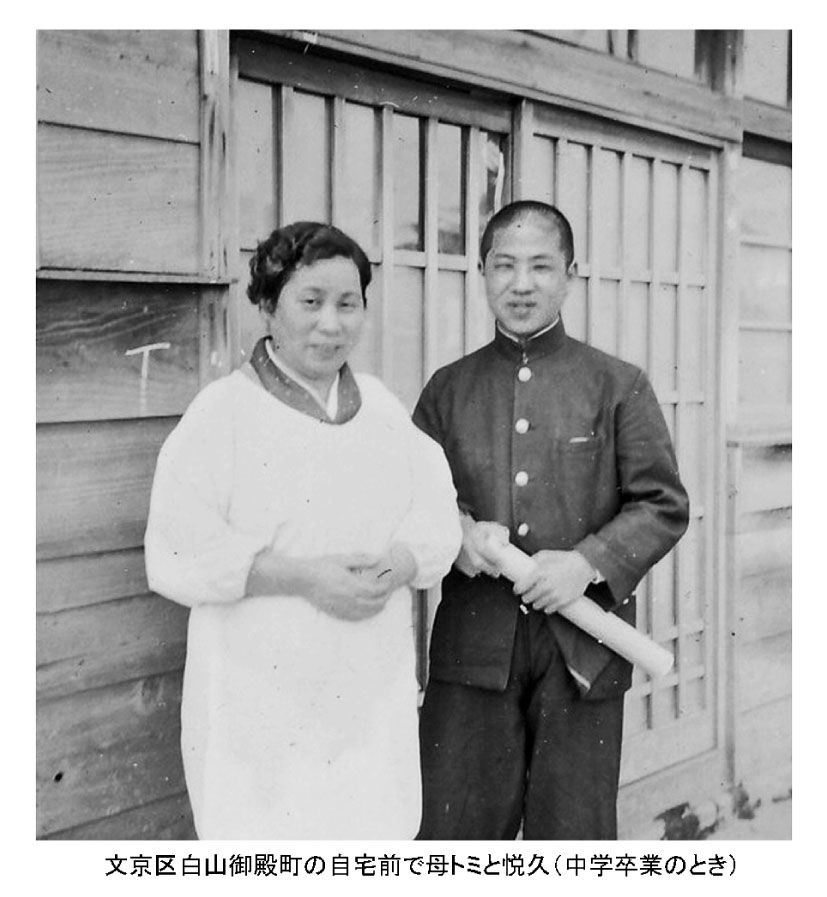
こうして２学期も終わり、終業式の日を迎えました。家に帰ると、私はいつものように、すぐトミに通信簿を見せました。トミは少しうなずきながら、ほほえんでいます。口に出すことが苦手なトミですが、表情を見れば気持ちはわかりました。
欽一はいつものように、部屋の片隅に通信簿を放り投げ、寝ころがってマンガを読んでいました。トミもいつものように、欽一の通信簿を拾って見始めました。
間もなくして、トミは首を少し横に振りながら通信簿の表紙を確認しました。本当に欽一の通信簿かどうか、もしかして友達の通信簿と間違えてきたのではないか、と思ったからです。なんと、欽一の成績は１００番以内に入っていたのです。トミは、何も言葉には出しませんでしたが、ニッコリとほほえみました。
欽一は、１学期の成績を見てトミがさびしそうな顔をしたときに決意した通り、猛勉強をしたのでした。はたからはマンガを読んでいたようにしか見えなかったのですが、それは私たちがいるときだけ。教科書の上にマンガを置き、マンガを読んだフリをしていただけでした。実際は、深夜まで勉強をしていたのです。
私を早く寝かそうとしたのも、早く勉強を始めたかったからでした。私は全く気が付きませんでした。
欽一は勉強で親孝行したことを確かめると、３学期はまた２５０番以下の成績に戻ってしまったのでした。
初めて笑いをとる
欽一がコメディアンになるきっかけとなる出来事は、中学２年生のときに起こりました。
担任の先生は体育系の大学を卒業した若い保健体育の女性教師。いかにもスポーツウーマンという格好をして、学校中をさっそうと歩いていました。そんな先生に、生徒たちは、〝アパッチ〟とあだなをつけていました。しかし、先生が内心、いやな思いをしていたことを察知していた生徒たちは、先生がいる前では、決して〝アパッチ〟とは言わないようにしていました。暗黙の了解でした。
それでも、いやがることをやりたいと思うのが中学生。保健体育の前の休み時間は、教室の黒板に〝アパッチ〟と書いては楽しんでいました。もちろん、先生が教室に入って来るときは、消しておくということで。
クラスであまりめだたなかった欽一は、そんないたずらに付き合う気持ちはありませんでした。それが、あるとき「おい、萩本。お前いつも黒板に書かないけど、先生に怒られるのがこわいんだろう。大丈夫だって、消せばいいんだから。書けよ！」と友達が言ってきたのです。
「いやだ」とはっきり言えない欽一は、仕方なく黒板の前に行き、友達と同じように〝アパッチ〟と書きました。
「先生が来たぞ！」
書き終わると同時に、教室の入り口で見張っていた生徒が叫びました。いつも書き慣れている友達は、さっさと消して席に着きましたが、あわてたのは欽一です。「こんなこと書いたら、先生いやがるだろうな」と気を使いながら書いていたこともあり、消さずに席に戻ってしまいました。
「しまった！ 消さなかった」
そう気付いたのは、先生が教室の戸を開けて入ってきたときでした。
教室の中は、クスクスという笑い声。まだ黒板を見ていなかった先生は、いつもと違う教室の雰囲気に、いやな予感がしたようでした。そして、振り返って黒板を見ると、真ん中に、〝アパッチ〟の文字がはっきり残されていました。
教室に入ってくると、いつも生徒が笑顔で迎えてくれていたのは、このことだったのか。そう気付いた先生の顔がくもり、
「誰ですか、これを書いたのは？」
と教室を見渡しました。
名乗れば、絶対にしかられる。そう思った欽一は、顔を下にして先生と目を合わせないようにと必死でした。しかし、
「正直に言わないと、今日は授業をしませんよ」
と、先生はさらに声を荒らげました。
先生は本当に怒っている。「まずいことになった......」と、欽一は心の底から自分のしたことを悔やみました。少しだけ顔を上げると、友達の視線が自分に向かっています。みんなの目は、間違いなく「言っちゃえ、言っちゃえ」とけしかけていました。
欽一は、しかられることを覚悟しながら、
「ぼくです」
と、少し手を挙げながら小さな声で答えました。
「萩本君！」
先生の大きな声が、教室に響きました。
「さあ、爆弾が落ちる！」
欽一は、縮こまりました。しかし、先生の次の言葉はこうでした。
「男の子は、このぐらいのことしなきゃだめよね」
とても、やさしい声でした。
「先生は、ぼくのしたことをしからなかった......。よかった」
欽一は、先生のやさしさにうれしくなり、次の授業のときには先生への感謝の気持ちを、どうにかしてあらわしたいと考えていました。
次の保健体育の授業が始まりました。しばらくして先生が、
「これ、わかる人いる？」
と質問すると、ひときわ大きな声で「はい！」と返事をした生徒がいました。欽一でした。先生への感謝の気持ちとは、授業の中で元気に手を挙げることだったのです。
先生は、大きな声がする方に顔を向けると、今まで手を挙げたことのなかった欽一だったことに驚きながらも
「はい、萩本君！」
と指名しました。
「えっ、あてるなよ......」
答えるつもりなど毛頭なく、手を挙げることしか考えていなかった欽一は、ビックリ。それでも、指された以上は何か答えないわけにはいきません。
「わかりません！」
と、はっきりと確信を持って答えました。すると、教室中に大爆笑が起こりました。
欽一が多くの人たちから笑いを取った、これが人生初めての体験でした。
「自分の言ったことで、こんなに笑ってもらえた！」
答えられなかったことなどどこかに吹っ飛び、自分の存在をみんなが認めてくれたことへの感動が、身体中を走りました。
この日。内気な少年が、やがてお笑いの世界に入る第一歩になった日になるなど、このときは誰も気付くことはありませんでした。もちろんトミも。
１週間で終わった不登校
やがて、欽一が高校を受験する時期を迎えました。トミは欽一に進学してもらいたいと思っていたようですが、「高校に行きなさい」とは一度も言いませんでした。進学に必要なお金が用意できなかったからです。
欽一の心は、決まっていました。
「中学を卒業したら、仕事で金もうけができるようになろう。そして、自分が家を建てて、お母さんに楽させてあげるのだ」
と思っていたのです。
「金持ちになるには、プロ野球の選手か芸能人しかない」
そう考えていた欽一でしたが、野球は草野球しかやったことがありません。プロ野球の選手には絶対なれっこないとなると、あとは芸能人しかありません。
「そうだ、お笑いの世界に進もう」
先生に指名されて「わかりません」と答えたとき、クラスのみんなに笑ってもらえた感動がよみがえり、そう決めました。
欽一はトミに心配をかけないようにするため、東京都立の高校に願書は出しました。しかし、受験日に試験会場へは行かず、映画を見に行ってしまいました。もちろん、トミには内緒です。最初から高校に行くつもりはなかったのです。
欽一は、お笑いの世界で大変人気のあった浅草の「デン助劇団」に入りたいと考えていました。そして、團治の知り合いで、浅草の東洋劇場（現・浅草演芸ホール）で劇作家をしていたＭさんと出会い、そのＭさんが欽一をデン助（大宮敏充）さんに会わせてくれることになりました。
デン助さんは、
「お笑いの世界に入るといっても、高校でしっかり勉強してこないとだめだよ」
と言いました。欽一は、
「じゃあ、高校出たら、デン助劇団に入れてくれますか」
と聞くと、
「いいよ」
との返事。
「しまった！ 都立高校を受験しておけばよかった......」
欽一は後悔しましたが、急きょ、まだ募集している私立高校を探し、無事駒込高校に入学しました。
欽一が高校に通っていたのは、「デン助劇団」に入るためでした。学校の月謝などで経済的な負担をかけてしまっていることに責任を感じ、入学してすぐに新聞配達、ビルの窓拭き、トイレ掃除、封筒の宛名書き、鉄板磨き、さらには飲食業など、数多くのアルバイトをして、がんばりました。ときどきは、浅草に住んでいた團治のところにも遊びに行っていたようでした。
あるとき、
「学校、おもしろくないから、やめたいんだ」
と言うと、團治は「やめて、何がしたいんだ？」と聞きました。
「毎日、映画を思い切り見たいんだ」
と答えると、
「よし、わかった。学校はやめることはない。しばらくはこの金で、毎日映画見ろ」
と言って、ポンとお金を渡しました。
「えっ......」
欽一はビックリしましたが、父親の公認がとれたのです。次の日からは高校に行かず、毎日、映画館に通いました。
ところが、３日も通っていると、町を歩いている制服姿の高校生が気になり始めました。１週間もすると無性に学校に行きたくなり、
「映画を見ているより、学校の方がずっとおもしろいや」
と思うようになりました。
こうして、欽一の不登校は１週間で終了しました。もちろんトミは、欽一がそんなことになっているとは、全く気が付いていませんでした。
やっとかなった夢
「ぼくの夢が、やっとかなうんだ」
高校卒業の日。卒業証書を持って、うきうきした気持ちで再び「デン助劇団」のある浅草に行きました。
そのとき、映画館街で、３年前にデン助さんに会わせてくれたＭさんとばったり会ったのです。Ｍさんは、欽一が約束を守って高校を卒業して、再び浅草に戻ってきたことを、とても喜んでくれました。ところが......。
「でもね、欽ちゃん。毎日、たくさんの若い人がデン助さんのところに弟子入りさせてください、って来ているんだよ。気の毒だけど、３年前の欽ちゃんとの約束なんて、きっと忘れていると思うよ」
「そんな......」
欽一は「せっかく卒業証書を持ってきたのに」と、落ち込みました。するとＭさんは、
「もし、デン助さんに断られたら、私のいる東洋劇場に来なさい。頼んであげるから。ここでもコメディアンになるための勉強はできるよ」
と言ってくれました。
欽一は、コメディアンになるスタートを絶対につまずきたくないと思いました。
そして、腹を決めました。
「ぼく、デン助さんのところに行きません。東洋劇場に入れてください」
そう、お願いしたのです。
こうして、欽一は東洋劇場に入り、コメディアン人生を始めることになりました。劇場の掃除、踊り子さんたちの使い走りなど雑用がほとんどで、給料は当時のお金で月３０００円。定期代が月１７００円でしたから、昼食代は毎日、トミからもらっていました。
欽一は今、社会人野球チーム「茨城ゴールデンゴールズ」の監督をしていますが、中学生のとき持っていた「プロ野球選手」というもう一つの夢を、実現させたのかもしれません。
トミは、欽一がお笑いの世界に入ることには内心反対していました。團治が事業に失敗するのを見ていましたから、子どもたちには会社勤めをしてほしいと思っていたようでした。
しかし、子どもたちが自分で決めた道に、反対したことはありません。欽一のときも「ああ、そうかい」と言っただけで、口に出して「やめなさい」とは言いませんでした。
欽ちゃんのサインが、ほしいんだよ
トミが90歳の頃のことです。欽一が出演していた舞台を、見せることになりました。久しぶりに外出した母親に会うため、きょうだいがみんな劇場に集まりました。
舞台が終わり、みんなでトミを欽一の楽屋に連れて行きました。車イスに乗ったトミは、久しぶりに欽一に会うというので、ものすごく緊張しているようでした。楽屋で顔を会わせても、恥ずかしそうにしていて自分からは話そうとしません。
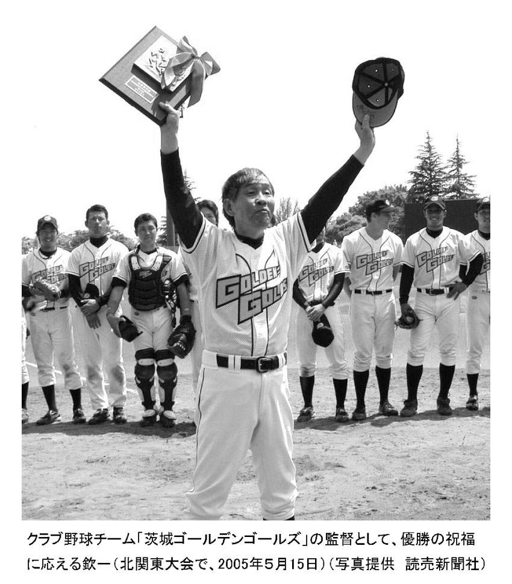
しばらくして、二女の圭子が「友達から頼まれた」と言って、用意してきた色紙を何枚か出し、サインを頼みました。サインが書き終わる頃、今まで黙っていた母が、重い口を開きました。
「私にも、書いてくれるかい」
そう、遠慮がちに言ったのです。
欽一は、
「えっ！ お母さんにも書くの？」
と笑いましたが、トミのためにサインを書きました。そして、色紙のはじを指し、
「ここは、〝お母さんへ〟って書こうか、〝おふくろさんへ〟にしようか」
と聞きました。
トミは、
「だめだよ。そんなことしたら、私が、欽ちゃんのお母さんだっていうことが、わかっちゃうだろ。そこは、〝萩本トミさんへ〟にしてくれるかい」
と言いました。欽一は首を少しかしげて、
「いいけど」
と言いながら、〝萩本トミさんへ〟と書きました。トミはホッとしたように、
「私は、テレビによく出てくる〝欽ちゃん〟のサインがほしかったんだよ」
と、うれしそうな顔をしました。
子どもたちに貧乏をさせてしまったことを、いつも申し訳ないと思っていたトミは、自分のような母親が欽一のお母さんだと世間の人にわかってしまうと人気が落ちてしまうのではないか、と気を使っていたのです。
一緒に暮らしているわが家でも、トミは欽一の母親であることを口止めします。その一方で、近所の人が訪ねてくると、部屋に飾ってある欽一のポスターを指しては、「欽ちゃんは、私のお腹から生まれたんだよ」
と誇らしげに話すトミでした。
欽一は２００７年８月18日（土）と19日（日）、日本テレビの「24時間テレビ愛は地球を救う」の中で、24時間マラソンに挑戦しました。
19日の朝は、いつものようにトミを起こして、ベッドから車イスに座らせました。
前日から始まった欽一のマラソンをトミに見せるため、テレビのスイッチを入れると、ちょうど欽一が走っているところが映りました。耳の遠いトミに早速、筆談で「欽ちゃんが、24時間テレビで一日中走っているよ」と書いて見せると、メモを読んでいるうちに「一日中？ 大丈夫？」と心配そうな返事。トミの親心だと思います。
私が、「大丈夫」というようにうなずくと、トミは少し安心したようにテレビを見つめ、欽一を指で指しながら「これでいい、これでいい」と言いました。トミの「欽一、がんばれ！」というメッセージだったのでしょう。そして、トミは起きている間中、ずっとマラソンの様子を見つめていました。
私は、欽一が24時間マラソンに挑戦すると知ったとき、「やめた方がいい」と思いました。36年間、小学校教員としていろいろな運動をしてきた私ですら、できる自信はありません。ましてや、運動には縁のない欽一には荷が重い、と思ったからです。かといって、欽一は、一度自分で決めたことは絶対翻すことはしません。ただただ、最後まで完走してほしいと願うばかりでした。
夜の８時、欽一のマラソンは、いよいよフィナーレを迎えようとしていました。トミは「眠たい」というので寝かせましたが、最後のゴールを見せるために、ベッドは起こしておきました。
私と家内は、テレビに釘付けになっていました。完走できるか気になっていて、
「応援している人に、ハイタッチしている場合でないだろう！ 早く走れよ！」
とやきもきしていました。
９時過ぎ。ゴールの様子が生放送で映しだされたとき、私は、
「ウワォ、完走したよ！」
と声をもらしていました。そして、完走したこと以上に、欽一のやさしさに感動しました。
トミはこのゴールの瞬間を見ただろうかと気になり、急いで２階に上がってベッドをのぞきましたが、スヤスヤと眠っていました。
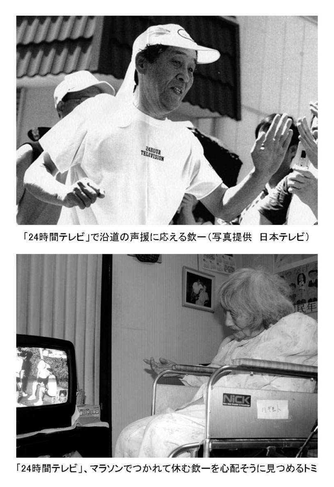
第４章母は、漢字博士
干支も習字も、母が教えてくれた
トミは家事も育児も人まかせでしたが、子どもの面倒をいっさい見ない母親だったかというと、そうでもありませんでした。トミから教えられたこともたくさんありましたし、母親らしい面も少しは持っていました。そして、末っ子の私を一番かわいがってくれました。
トミは、字に対してはいつも真剣でした。
「字は、一生使うものだから、ていねいに書きなさい」
これがトミの口癖でした。
私や欽一は、小学校で漢字の宿題が出ると、早く終わらせるため「へん」と「つくり」を別々に書いていました。よく見つかっては、しかられました。何をしてもしからないトミでしたが、漢字に対してだけは、とても厳しい母親でした。
「へんとつくりがひとつになって、漢字はできているの。別々に書いちゃ、意味がないでしょ。そんな書き方をするなら、宿題なんかしなくていいよ」
いつも、トミは言っていました。
干支を教えてくれたのも、トミでした。おかげで、漢字はわからなくても小学校一年生のときから、
「ね・うし・とら・う・たつ・み・うま・ひつじ・さる・とり・いぬ・い（子・丑・寅・卯・辰・巳・午・未・申・酉・戌・亥）」や、
「こう・おつ・へい・てい・ぼ・き・こう・しん・じん・き（甲・乙・丙・丁・戊・己・庚・辛・壬・癸）」
を、すらすらと言うことができました。
また、睦月（１月）、如月（２月）という陰暦も教えてくれました。
習字も、トミから教わりました。姿勢から、筆の持ち方、硯に墨を擦る方法、筆に墨を付ける方法まで。基本を徹底的に教わりました。こんなときは、普段の生活では見ることのできない、真剣な姿を見ることができました。トミは「漢字博士」だったのです。
あるテレビで、欽一がお世話になった方への感謝の思いを、大きな色紙にしたためたことが紹介されていました。
筆で書かれた文字というのは、とても心に響くものです。欽一はその思いを墨で書いており、テレビの画面で見たときは感動しました。
私も、手紙はいつも筆で書きます。年賀状も必ず、宛名とひと言は筆で書きます。最近はパソコンで打ち出された宛名が年賀状の主流になってきましたが、印刷された年賀状をもらっても、出してくれた方の心は伝わってきません。
私たち６人きょうだいの年賀状は、みな筆字です。これは、トミから授かったすばらしい財産だと思っています。
宿題ができない！
浦和の家の周りは、とてものどかでした。数軒の家が並んでいましたが、少しはずれれば畑が広がり、私は学校の帰りなどに近所の子と寄り道をしては、小川でザリガニ捕りをしていました。森や池など他の遊び場もたくさんあり、家の中で遊ぶことは、ほとんどありませんでした。
当然、どろんこになって帰ってきます。トミはもちろんしかりませんが、洗濯は長女の玲子がやってくれていましたから、ある意味それも当然でした。
私は遊びに行くときは、欽一に勝手にくっついて行くのですが、たまに置いていかれると、すぐ泣いて訴えました。すると、トミはいつも欽一に、
「よっちゃんを連れて行きなさいよ！」
と言ってくれました。トミは、私にだけは甘い母親でした。
夏休みも、勉強など全くしません。原っぱで遊んだり、小川や池でフナやザリガニを捕ったり、森でセミや虫を捕ったりと、忙しくも楽しい毎日を過ごしました。
「夏休みの宿題やったの？」
などと、心配するトミではありません。しかし、その結果、８月最後の１週間は大忙しになります。全く手をつけてなかった宿題を、終わらせないといけないからです。
こんなときでも、欽一はあわてません。結構、適当に終わらせていたようでした。
しかし、私は「適当に」ということがきらいで、きちんと終わらせないと気が済まない性格でした。
「宿題ができない！」
と言っては大騒ぎし、特に工作と図画の宿題では、
「絵が描けないよ～」
と泣いて訴えたものでした。
そんなとき、トミは二女の圭子に言うのです。
「けいこちゃん、よっちゃんの絵を描いてあげなさい」
と。私はそれをチャッカリ期待して、トミに助けを求めていたのです。
圭子は絵が得意で、しょっちゅう絵画展で入賞するほどの腕前でした。その圭子が描いてくれるのですから、安心です。圭子は「しょうがないなあ」という顔をしながらも、弟のために一生懸命描いてくれました。
担任は田辺邦子先生で、「小学１年生が、こんなに上手に描けるはずがない」ということは、わかっていたと思います。それでも、先生は、
「家の人に描いてもらったの？」
と聞いたことはありませんでした。それが、子ども心にもうれしかったのでしょう。私が教師になったあとは、宿題を家の人に手伝ってもらったことがわかっても、いっさい、そのことには触れないようにしてきました。
夏休みの宿題の話に戻りますが、算数の宿題の担当は、高校生の二男・安是でした。もちろん、トミが、
「よっちゃんの算数、見てあげなさい」
と言ったからです。安是は理数系にすぐれていて、全部自分でやってくれました。私は、その答えを書き写すだけでした。
こうして、姉や兄の力を借りて、宿題は無事終了です。トミは、子どもたち一人ひとりの性格や素質をよくわかっていましたから、それを私のために大いに活用してくれたのです。
めったにほめない母が、ほめてくれた
「よっちゃん、ヒューズ換えて！」
停電になると、トミはすぐ、こう私に言いました。
ヒューズとは鉛の線のことで、各家庭にあるブレーカーのことです。今は停電になると、ブレーカーのスイッチをＯＮにすればいいのですが、昔は、このヒューズをプラスとマイナスの２カ所につなぐ作業が必要でした。そして、なぜかトミは、小学生の私に、これをやらせていたのです。
初めてヒューズを取り換えたのは、４年生くらいのときです。
ある日、電気を使い過ぎて停電になってしまったのですが、そのとき家にいたのがトミと私だけでした。トミが自分でヒューズを換えることなど絶対ありません（いや、できません）から、
「よっちゃんは、器用だから何でもできるよね」
と、そばにいた私に頼りました。
器用という意味さえもよくわからない私でしたが、何となくトミに期待されていることだけはわかります。がぜんやる気になった私は、さっそくヒューズとドライバーを用意しました。兄たちがやっていたのを見ていましたが、初めてのことですからドキドキしていました。
ヒューズカバーを開けて作業するので、ドライバーの先がヒューズをつなぐ留め具以外のところに触れてしまうと、青い火花をたてて再びショートしてしまいます。そうなると、今度は近所まで停電になる可能性があり、そのことがとても怖かったです。
それでも、何とか無事終了。電気がつきました。
「やっぱり。よっちゃんは器用だから、何でもできちゃうのよね」
めったにほめてくれないトミが、ほめてくれた......！ 私は、とてもうれしくなりました。
私へのほめ言葉は、このときだけでは終わりませんでした。夕食のとき、兄や姉に、「よっちゃんは器用だから、今日、ヒューズを直してくれたんだよ」
と話したのです。
トミは、めったにほめることはしませんでしたが、欠点や失敗を責めることもありませんでした。
私が小学２年生のときに團治の会社が倒産したことはお話ししましたが、その後、わが家は引っ越しを繰り返しました。当然、転校も多くなり、小学３年生のときに東京都の台東区立西町小学校に転校しました。担任は、大竹三生先生という40代の男の先生でした。
国語の授業が行われたときのことです。教科書のセリフのあるところを、何人かが前に出て読むことになりました。私は手を挙げなかったのですが、大竹先生が指名しました。実は、このときトイレに行きたかったのですが、転校したばかりということもあり、恥ずかしくて言い出せなかったのです。しかし、指名されてしまったので、仕方なくみんなの前に立ちました。
先生の「始め！」の合図で、読みが始まりました。しかし、私はとうとうがまんができなくなって、黒板の前でもらしてしまいました。
教室の中は、騒然としました。先生は授業を中断し、すぐ、
「トイレに行きなさい」
と言い、濡れた床をぞうきんで拭いてくれました。トイレから戻ると、私を教室には入れないで、廊下で、
「おうちに帰って、お母さんにパンツを替えてもらってきなさい」
と、やさしく言ってくれました。
急いで家に帰り、教室でもらしてしまったことを告げると、トミは、
「今度、おしっこがしたくなったら先生に言うのよ」
とだけ言って、すぐにはき替えさせてくれました。
私は、急いで学校に戻りました、きっと、友達にひやかされるだろうと思っていましたが、特にからかわれることもなく授業に戻ることができました。大竹先生がみんなに、
「萩本君を、からかっちゃいけないよ」
と言ってくれたのだと思います。とてもありがたい先生でした。そして、この話は私とトミだけの秘密になりました。
ウソをついちゃいけないよ
「今日の夕飯は、〝ウナギ〟だよ！」
台所から、弾むようなトミの声が聞こえてきました。
「ウォー、すごい！」
居間にいた安是と圭子が、〝ウナギ〟と聞いて歓声を上げました。
その日は日曜日で、トミと私しかいなかった昼頃、威勢のいい若いお兄ちゃんが台所の裏口から入ってきて、
「奥さん、おいしい〝ウナギの蒲焼き〟、買わないかい？」
と、声をかけていたことを思い出しました。
お母さんが、〝ウナギ〟を買ったんだと、私はうれしくなりましたが、同時に欽一顔と見合わせました。
「ぼくたち、今までウナギを食べたことあったっけ？」
という確認作業でした。当時、ウナギは高級食材で、貧しいわが家の食卓に上がるはずなど、なかったからです。
私は、ウナギがどんな味なのかすら、わかりませんでしたが、とにかく尊敬する兄や姉が驚いているくらいなのだから、すごいご馳走なのだということだけは想像できました。
いよいよ、トミが香ばしい「ウナギの蒲焼き」を並べ始めました。
私と欽一は、また顔を見合わせました。魚がおかずのとき、１人１匹ということは、まずありません。一番安いサンマですら、よくて１人半切れです。それなのに、幻のウナギが、なんと１人１匹ずつ。それも皿からはみだしそうなほどの大きさでした。
「ウナギって、こんなにおいしいものだったんだ」
私と欽一は、今度いつお目にかかるかわからないウナギの味を、かみしめていました。すると、ひと口食べた圭子が、
「やーだ、お母さん。これ〝穴子〟じゃないの？」
と言うのです。
「なに？ アナゴって」
初めて聞く「アナゴ」という言葉に、私はわけがわからなくなりました。昼は確か「ウナギ」を売りに来ていたはずなのに。欽一だけは、目の前にある「ウナギ」に集中しながら、黙々と食べていましたが。
トミは「余計なことを言うんじゃないの」とでも言いたそうな顔をして、
「これは、ウナギなの！」
と語気を強め、
「おいしいね、おいしいね」
と言いながら食べています。あとになってわかったことですが、やはり、圭子の言う通り、食卓に並んだのは「アナゴ」でした。
そういえば、ウナギ売りのお兄ちゃんとトミの会話は、買っただけにしては少し時間がかかっていました。このとき、トミは「ウナギ」が実は「アナゴ」だと見破っていました。そして、そのお兄ちゃんを、やさしく諭したのです。
「うそをついちゃいけないよ。正直に言えば、買ってあげるんだから。あなたは、本当は正直な人なのよね。あなたの親方が悪いのよ。『ウナギ、と言って売ってこい！』って言われたのよね。かわいそうに」
昔は、アナゴは「江戸前アナゴ」といって、東京湾でたくさん捕れていました。安かったので、普通の家の食卓にも並んでいたようです。そのアナゴを「ウナギ」として売れば、たいそうもうけることになります。トミからそのことを指摘されたお兄ちゃんは、さっきの威勢もどこかに飛んでしまい「すいません、すいません」とあやまるばかりでした。
トミは、
「じゃあ、アナゴとして買ってあげるからね」と言って、いつものように子どもたちに１人半切れずつを買いました。
お兄ちゃんは感動し、注文した倍の「アナゴ」を置いていったのでした。
というわけで、夕食に１人１匹のアナゴが出ることになったのです。
ところで、私が一番好きな寿司のネタは、アナゴです。家内とよく行く「寿司勝」のおやじさんがにぎってくれるアナゴは文句なしにうまいし、アナゴを食べていると、あのときの食卓の光景が浮かんできます。
海水パンツが買えなかった
私はいつも、外に出るときの服装には、とても気をつかいます。トミはいつも、子どもたちのためには恥ずかしくないような服を用意してくれましたので、その影響でしょう。
小学校の教員になって初めての遠足のときは、背広にネクタイでしたし、授業の一環で行われていた２泊３日の移動教室のときも、当時住んでいたアパートの大家さんに小型のスーツケースを借りて、背広姿で出かけました。他の先生の服装を見て、さすがに次回の遠足や移動教室では、背広は着ていきませんでしたが。
小学６年生のときに行った修学旅行のことです。１泊２日の箱根旅行のために、トミは一張羅の服を用意してくれました。
このとき、旅館の温泉プールで泳ぐことにもなっており、持ち物の中には海水パンツも入っていました。前日の持ち物のチェックでは、３年生のときに買ってもらった海水パンツは小さすぎて、はけなくなっていました。いつもは、無理をしてでも用意してくれたのですが、どうしてもお金がなくて、中学１年生だった欽一の海水パンツを借りることにしました。欽一は快く「いいよ」と言ってくれましたが、私には大きすぎました。これじゃあ、はいて泳ぐことができません。
「こんな海水パンツじゃ、いやだ」
いつものように私は泣いて、トミを困らせました。しかし、大きすぎるのがわかったのは修学旅行の前日。仕方なく、欽一の海水パンツを持って行きました。
１日目はプールに入らなかったので、デカパンのことをすっかり忘れていましたが、２日目は午前中に温泉プールで泳ぐことになりました。
友達は皆、大騒ぎをしながら部屋を出て行きましたが、私は、わざとゆっくり準備をして、みんなが部屋を出たあとに、あのデカパンを持ってプールの脱衣場に向かいました。
プールでは、はしゃぎまわっている友達の姿が、脱衣場のガラス越しに見えました。
「ぼくも、泳ぎたい」
最初は泳がないつもりでしたが、やはり泳ぎたくなりました。
周りには、誰もいません。１日たったら少し縮んでいるかもしれない（！）と期待をしながら、デカパンを恐る恐るはいてみました。しかし、すぐズボンにはき替えました。
やはり、大きすぎました。縮むはずなど、ないのです。私には、このデカパンをはいてプールに入る勇気はありませんでした。脱衣場の窓から身を隠すようにして、みんなが楽しんでいる姿を見ているだけでした。脱衣場で、私の頭が濡れていないのを見た友達に、「萩ちゃん、プールに入らなかったの？」
と聞かれたぐらいで、誰も私が泳がなかったことに気付かなかったことが、唯一の救いでした。
修学旅行から帰ると、トミはデカパンのことには触れませんでしたし、
「泳いだの？」
とも、聞きませんでした。私も、あえて言いませんでした。
きょうだいだけで決めた引っ越し
私が、都立向丘高校２年生のとき、とうとう借金が限度を超え、返済のめどが立たなくなってきました。そこで、團治を入れない家族会議が行われました。
このとき、私の学費をどうするかが話題になりました。高校では軟式野球部のレギュラーとして毎日、練習に汗を流していました。足が速いこともあり、打順は１番で、守備はライト。甘えん坊の私は、アルバイトなどやる時間はないと思っていましたが、思わぬ方向に話が進み始めました。
「私が高校を退学して、借金返済の働き手になる」
というものでした。野球を続けられるかどうかなど、もはやそれどころではなくなりました。
このとき、長男の功が、
「高松の伯父さんが１年間、悦久の面倒を見てもいいと言っているけど、どうかな」
と提案しました。伯父は、團治の会社が順調なときに、まんじゅう屋からカメラ屋に転業しました。功はこういうときのために、かつて團治が面倒を見た伯父と連絡を取り合っていたのです。
トミは複雑な家族の問題になるときは、いつも聞き手に回り、絶対自分の考えを言いません。しかし「悦久、どうするか自分で決めなさい」と、無言で私に言っているのがわかりました。
私は「高校だけは出ておきたい」という気持ちがあって、結局、高校を卒業するまでの１年間、伯父の家で世話になることにしました。母親と離れて生活することは不安でしたが、高校を卒業するまでは、何とかがんばりたいと思っていました。
そして、高校３年生を高松で過ごしました。無事卒業して東京に帰ると、それまで住んでいた家は家賃が払えずに、追い出されていました。そして、圭子が勤めていた不動産会社の社長の好意で、社長さんの持っていた目黒区のアパートの一室を貸してくれることになりました。
間取りは１ＤＫ。６畳の和室と３畳の台所という狭い部屋でした。もちろん風呂も付いていませんでした。
この部屋にトミ、安是、圭子、欽一が暮らしていたのですが、そこに私が帰ってきたのですから、狭いところに大人５人で生活することになりました。
欽一は、それまで台所の板の間で寝ていましたが、弟の私に台所を明け渡し、自分は押し入れで寝ることにしました。寝る場所は、きょうだいそれぞれが勝手に決めました。
引っ越しそのものも、きょうだいだけで決めました。
「目黒に引っ越すよ」
と言われても、トミは、
「ああ、そうかい」
と言うだけ。
ここでの生活も、相変わらずトミは外出をせず、昼間はひとりで家の中にいました。子どもたちも皆、学校や仕事に出かけていましたから、買い物だけは、近所の人に会わないように暗くなってから出かけていたようでした。
私はもともと、建築設計士を目指していました。大学の建築科に入りたかったのですが、現役では合格せず、浪人をしました。
「大学に行きたいかどうかは、自分で決めなさい。ただし、合格しても入学金や授業料は出せませんよ」
というのが、暗黙の了解事項。入学金も授業料も安い国立大学を受けることにして、予備校の費用をためるために初めてアルバイトをしました。
千代田区飯田橋にあった職業安定所に通い、やっと決まった仕事は、秋葉原の電気屋さん。テレビ、電気冷蔵庫、洗濯機などの家庭用電化製品の配達が主な仕事で、毎日くたくたになって家に帰りました。勉強もはかどらず、特に、夜間の夏季講習を受けたときは、昼間のアルバイトの疲れで寝てしまうこともしばしばでした。それでも、予備校の費用は、すべて自分で稼ぎました。
受験は、国立一期校は希望していた建築学科。二期校は東京学芸大学を選びました。当時の国立受験は第１希望・第２希望の２校を選ぶことができました。
東京学芸大学を選んだのは、家から近くなので交通費が安く済むと思ったからです。特に教員になりたいと思ったわけではありませんでした。結果は、建築学科は不合格で、学芸大学・小学校教員養成課程の数学科に合格。しかし、もくろみがはずれ、東京・目黒区の家からは遠い、武蔵小金井市の本校舎に通うことになりました。
父とカメラ
私は、父の團治と一緒に生活したことがありません。しかし、思い出がひとつだけあります。それは、團治が会社の慰安旅行に、私と欽一を連れていってくれたことです。私が小学３年生のときです。
團治は出かける前に、
「これを使いなさい」
と箱形のカメラを持たせてくれました。２年前に会社は倒産しましたが、上野の１店だけは営業を続けていました。そのため、カメラは店のショーケースにたくさんありました。
このとき手にしたカメラは、被写体を見る窓とレンズが付いているだけの、今でいう使い捨てカメラのようなものでした。シャッターを切ったら、１回１回フィルムを手で回すタイプでした。
「このカメラはシャッターを押すだけだ。太陽を背にして撮るんだぞ」
そう團治は教えてくれましたが、子どもだった私たちには、どうしてか意味がわかりません。まだオート機能などはなく、絞りやシャッタースピードの調整は自分でしなくてはならなかったのです。
その後も、團治はときどき、おもちゃ感覚でカメラを持たせてくれました。小学６年生のときの修学旅行では、フラッシュも使いました。
「上野の店で、フラッシュを借りてきな」
と言われ、長男の功が切り盛りしていた店まで出かけ、いろいろ教えてもらいました。
フラッシュは、１回シャッターを押すたびにフラッシュ用の電球を入れ替える必要があり、手間がかかりました。しかし、私は写真屋さんになった気分で、友達みんなの写真を撮ってあげました。
家にはいつも、カメラの部品が入った段ボール箱がありました。いらなくなったカメラの部品をおもちゃ代わりに使っては遊んでおり、「あとを継いでほしい」とは言われなくても、いつしか團治と同じ仕事がしたいと思っていました。
結果的にあとは継ぎませんでしたが、子どものときの体験は、いつまでも心に残るものです。私が今もカメラを離せないのは、間違いなく團治の影響でした。
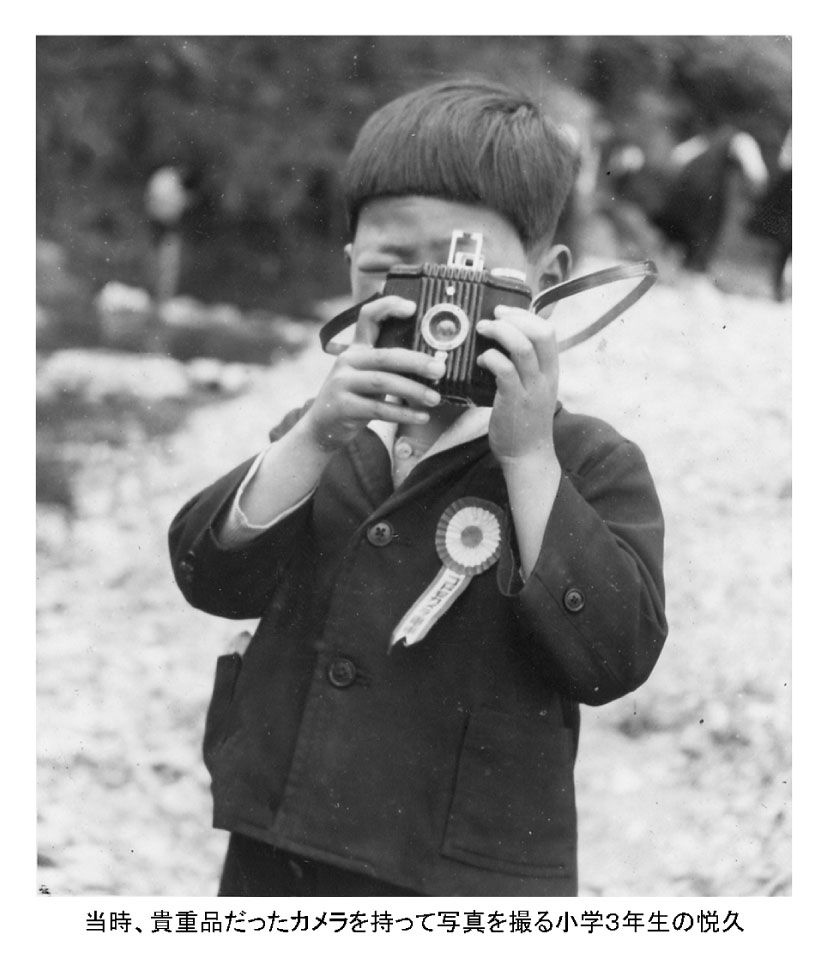
生涯、父の悪口を言わなかった母
團治の会社は、倒産したあとも借金返済に追われていました。
ある日、小学校から帰ると、梱包されたままのテレビが届いていました。まだ白黒テレビが世の中に出始めた頃で、テレビが買える家は裕福な家だけに限られていました。
家計が苦しいことは、多少はわかってはいましたが、テレビが買えるくらいだから結構もうかっているのかも......。私は安心して、
「早く、テレビ見せて」
とトミにせがみました。
「このテレビは、見られないの」
と、トミは厳しい顔で答え、
「何で見られないの」
としつこく聞くと、
「これは、うちのテレビじゃないからよ」
と、トミ。私は、
「そうだよな。テレビなんて、うちが買えるはずないもの」
とあきらめました。それから１週間もするとテレビは消えていました。
実は、團治が月賦でテレビを買い、それを売って借金返済にあてていたのです。このような自転車操業では、借金がどんどん増えていきます。その借金を子どもたちが働いて返すという悪循環が、しばらく続きました。
しかし、トミは團治の悪口だけは一度も言いませんでした。別の女性と暮らしているので家には帰ってこなくても、どんなに家が貧乏になっても。こんなトミの姿を見ていたから、兄や姉たちは自分を犠牲にしてでも、團治を見放さなかったのです。
私にも家での仕事がありました。借金取りが来たとき、
「今、誰もいません」
と言う役目で、私の性格には合わない仕事でした。
トミは家では、物音をたてずに静かに暮らしていました。玄関の鍵も、いつも締めていました。すべて借金取り対策です。昼間に誰かが訪ねてきても、決して家の鍵を開けることはせず、居留守を使うのです。
私が家にいて誰かが訪ねてきたときは、
「よっちゃん、出て」
と頼みます。借金取りだった場合は、
「誰もいません」
と答えることになっていました。
もう一つ、仕事がありました。大家さんに、家賃の一部を持っていくことです。
他人にあやまることができないトミは、家賃を自分で持っていくことなどしません。家賃は一部しか持っていけないため、いつも私がトミの代わりにあやまらなければなりませんでした。それが、とてもいやでした。
大家さんはとてもやさしい方で、私が行くと必ずお菓子をお駄賃にくれます。家に帰って、
「お菓子もらったよ」と言うと、
「ほら、やっぱり。よっちゃんが行ってよかっただろ」
と、恩着せがましく言うトミでした。
借金は絶対しない！
あやまらなければいけないことはしない！
人に迷惑をかけたら、言い訳しないで、すぐあやまる！
トミのおかげで、この３つが私の人生訓となりました。
３つの「ない」
トミの人生訓は、
しからない！
もったいない！
人に迷惑をかけない！
の３つの「ない」でした。
トミは食事のときに、子どもたちが全員いるかどうかなど、いちいち確かめません。ご飯のときにいないのは自分が悪いのだから、
「おかずがなくなっても、責任は自分にある」という不文律もあり、
「夕飯に間に合うように帰った方がいい」
と、みんな思っていました。それでも、欽一と私は遊んでいてよく帰りが遅くなりました。夏は日が落ちるのが遅いため、なかなか暗くならないからです。
「ご飯のとき、いなかったんだね」
トミの反応は、これで終わりです。
「早く起きなさい」「早く寝なさい」も、言われたことがありません。
不思議なもので、言われないとかえって「自分で起きないといけない」と自覚するものです。早寝早起きの習慣は自然に身に付いてしまい、今でも続いています。
しからないトミのおかげで、
「うるさいなあ」とか、
「わかってるよ」などと口ごたえすることも、ありませんでした。
トミは食事のとき、子どもたちに先に食べさせて、みんなが終わってから食卓につきました。自分のおかずは用意しないで、子どもたちが残した物を、きれいに食べるのです。子どもたちがおかずを残さないときは、梅干しやつけものだけで食べていました。
特に、魚の食べ方は見事なもので、骨以外は全部食べてしまいます。魚の骨でさえ、良い肥料になるといって庭の菜園で使っていました。「もったいない」が口癖で、食べ物を残したり捨てることは、決してしませんでした。トミのそういう姿を見てきたので、私たちきょうだいは今も好ききらいがなく、何でもよく食べます。
好ききらいをしなかったもう一つの理由は、トミがおかずを食卓に並べるとき、
「今日は、よっちゃんの好きなジャガイモで肉ジャガを作ったよ」
など、子どもたちの好物（と思い込まされていた）のおかずを作っていたことです。
「よっちゃんの好きな」
と言われると、特別好きでもないのに、あとには引けなくなります。
「お母さん、このジャガイモおいしいよ」
と言いながら食べたものでした。おかげで、私の大好物は今もジャガイモです。
「もったいない」は、食事のことだけではありませんでした。すり切れたり、破れたりした服も、絶対捨てませんでした。
ただ、トミのそういう態度に一番閉口していたのは、玲子だったと思います。破れた靴下や衣服を繕うのは、玲子なのですから。そして、末っ子の私の服は、いつも欽一のお古でした。
「もったいない」は、すっかり浸透し、買い物のときは買い物かごを持って行きます。新聞紙や包み紙は、トイレットペーパーにしたり火をおこすときに使います。そんなわけで、わが家ではゴミになるものは、ほとんど出ませんでした。トミのおかげで、簡単に捨てない習慣も身に付けることができたのです。
「人に、迷惑をかけてはいけません」ということも、よく言っていました。團治が会社を倒産させて多くの人に迷惑をかけたことを、肌身に感じていたからだと思います。大人になって、私たちきょうだいが人のために汗を流すことが自然とできるようになったのは、トミのおかげです。
功は、町内会の会長や法人会での世話役。生命保険会社に勤める玲子は、若い人たちの結婚相談にのっています。安是は会社の上司として、部下の面倒をよく見ていました。圭子は社交的で、一度会えば誰とでも友達になってしまう、不思議な力を持っています。欽一は、みなさん知っての通りです。私も、小学校の教員を36年間勤め上げることができました。
「人に迷惑をかけてはいけません」と言われ育った私たちは、いつしか、人のために働くことに生き甲斐を感じるようになっていきました。
母の贈り物〝黒い筆箱〟
現在、私の職場の机の引き出しには、細長いセルロイド製の「黒い筆箱」が入っています。鉛筆４本と消しゴム１個しか入りませんし、相当古くなりましたが、私の宝物です。教員時代はこの筆箱を職員室の机の中に入れていました。
この筆箱は、高校３年生のときに高松の伯父の家でやっかいになる前に買ったものです。出発する日、トミが、
「あなたの好きなものを買いなさい」
と言って５００円を渡してくれたのです。お金がなかったはずなのに、トミの精いっぱいの贈り物でした。
私は、今まで自分が自由に使えるお小遣いをもらったことがなかったので、とても驚きました。そして、筆箱がこわれていたので、何のためらいもなく黒い筆箱を買いました。その後は、筆箱をトミの心だと思って、大切に大切に使いました。
高松市内から少し郊外にあった県立香川高校（現・高松南高校）３年に編入学した私は、伯父の家で最初、とても緊張していました。伯父は、ほしいものは言えば買ってくれる人でしたが、授業料以外のことで無心することはできません。どんなものでも大切に使わなくてはいけない、と思っていました。
特に、黒い筆箱はこわれやすく、落とせばすぐ割れてしまいます。通学カバンに入れるときにも無造作に入れることはせず、教科書やノートの上にそっと入れるようにしました。遅刻しそうになって走り出すと、筆箱の中の鉛筆がカタコト踊り始めます。そんなときも、カバンを腕に抱えて振動を少なくするように工夫して、筆箱に負担をかけないようにしました。
伯父の家にいた一年間、黒い筆箱はトミの代わりになって私を励まし、心の支えになってくれました。
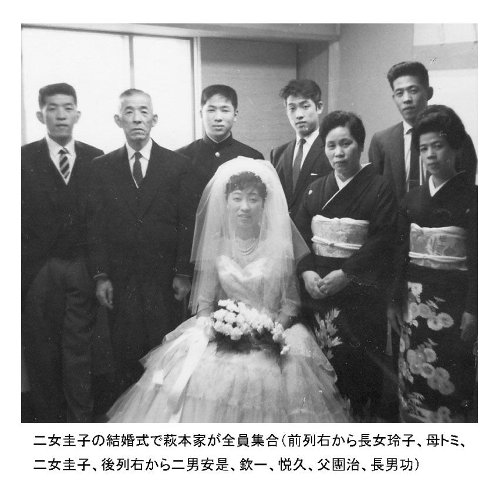
第５章生涯、母はお嬢さま
わが家に母を迎えて
１９７３年７月３日。父・團治は、前立腺がんのため72歳で亡くなりました。晩年はトミと一緒に生活をしており、ひとりになってしまったトミを誰の家で面倒を見るかを話し合うため、きょうだいで家族会議を開きました。
家内は「うちでよかったら、来てもらってもいいですけど」と、のど元まで出かかったようでしたが、そのときのわが家は２ＤＫの団地生活。子どもも１歳でしたので、最終的に、長男の功が引き取ることになりました。トミは65歳でした。
その後、しばらくは静かに暮らしていましたが、79歳のときに脳梗塞で倒れました。トミは、病気になったときでも、「着ていくものがない」と病院に行くことをいやがってきましたが、さすがにこのときばかりは、有無を言わさず病院に連れて行きました。
トミが入院したことを聞き、きょうだいみんなが駆けつけました。欽一も、忙しいスケジュールの合間をぬって飛んできました。トミの入院は初めてのことでしたが、お互いに顔を見合わせながら「こんなことがないと、きょうだいがみんなそろうことなんてないよね」と、トミのベッドの横で笑い合いました。
手足に若干の麻痺が残ったものの、話ができるまでに回復。およそ５カ月で退院することができました。再びトミの今後について、きょうだいで話し合いをしました。というのも、義姉（功の妻）の体調が悪く、トミが再び功の家で暮らすことがむずかしかったからです。
トミの性格を知っているきょうだいたちからは「わが家に」の声は、なかなか上がりませんでした。今度何かあったら命にもかかわるので、療養を専門にした病院に入れようか、という話も出ました。
その頃になると、わが家も一軒家となり、トミが暮らせる部屋も確保できました。末っ子で、いままで兄や姉に何かと世話になってきた私です。ここまでこれたことに感謝し「今までできなかった親孝行を、今度は私がさせてもらおう」と、うちに来てもらうことにしました。昼間、家にいるのは家内なので負担をかけるだろうと心配しましたが、快く賛成してくれました。
こうして、トミは私たち夫婦、中２の息子、小６の娘の家に来て、５人で暮らすことになりました。
トミと暮らすのは、およそ30年ぶりです。はじめは少々戸惑いましたが、私以上に驚いたのは、家内だったと思います。コントのような話も、たくさん生まれました。
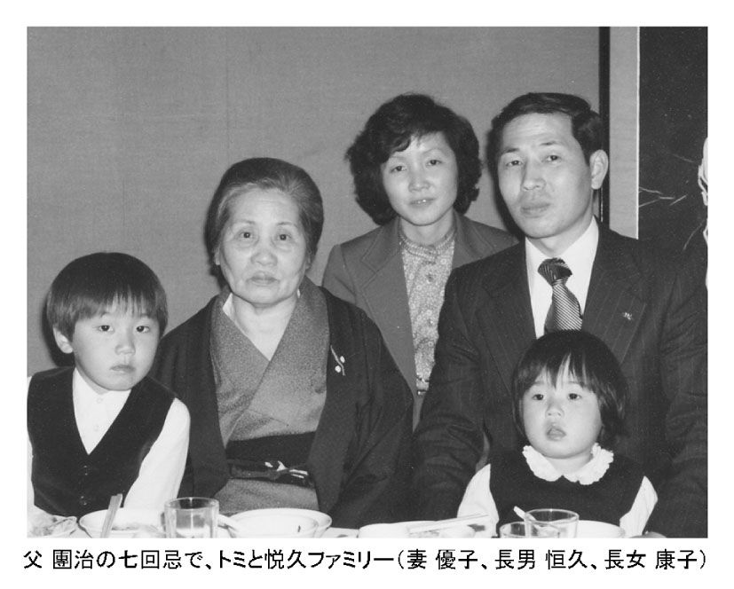
▼その１
あるとき、二女の圭子からもらったゆりかご式のイスが、こわれました。
トミ「このイスがこわれたのは、孫が乗ったからでしょ？」
家内「孫の体重より、お母さんの体重の方が何倍もあるでしょ？」（笑）
トミ「......」
太っているトミは、ひと言も言えず。
▼その２
トミ「パンツが盗まれた！」（ものがなくなると、すぐトミは「盗まれた！」と言います）
家内「かわいいパンツなら盗まれるけど、お母さんの大きなパンツは、盗む人いないわよ」（笑）
そう言って、家内はトミの大きなパンツをかかげました。
▼その３
家内が掃除機をかけていると、トミは「あんた、私に文句あるの？」と言いながら、部屋から出てきました。掃除機の音や子どもの足音、家内の子どもをしかる声などは、自分に向けられていると思っていたようでした。
こんなことは、日常茶飯事です。賢明な家内は、ユーモアで軽く切り抜けていました。
トミは、90歳近くまで日記を書いていました。あるとき、寝ていたトミの部屋に入ると、ベッドの食事台に置いてあった日記が目にとまりました。表紙には「萩本トミ子」。そう書いてあったので、「あれ？」と不思議に思いました。
そういえば、今まで何度か「トミ子」という言葉は耳にしていましたが、自分の名前を間違えているのだろう、ぐらいしか思っていませんでした。
後日、「お母さんの名前は、何ていうの」と聞くと、「トミ子だよ」という返事。「戸籍は、トミだよ。誰が付けてくれたの？」と聞くと、「誰かが付けてくれたんだよ」と答えるだけで、それ以上は話そうとしませんでした。
トミの実母は「シカ」、継母は「マサ」。明治時代、女性の名前はカタカナ二文字が普通でしたし、「トミ」と名前を付けてもらったのも、ごく自然のことだったのです。
ところが、高等女学校に行くようになると、「○子」と子のつく名前の子がクラスにいたのです。
「なんていう、きれいな名前なんだろう」
この頃はやり始めた「○子」という名前に憧れを持ったトミは、「トミなんて、若い子の名前なんかじゃない」と親をうらみました。このときから、お嬢さまは自分の心の中で「トミ子」と命名することに決めていたようでした。子どもたちの学校で書かされる保護者の欄は「トミ」でしたが、きっと、「トミ子」と書きたかったに違いありません。
ようやく、誰にも気兼ねしない年齢になり、長年心の奥にしまっておいた「トミ子」の名前が、自然に書けるようになったのだと思います。
テレビが茶飲み友達
ここで少し、功の家で暮らしていた頃の話をしたいと思います。
昼間はいつもひとりで留守番することが多かったトミですが、脳梗塞になる前でしたから体は自由に動かせました。生活に不自由なこともなく、あとは、茶飲み友達がいれば文句なしといったところでした。
いっこうに友達はできませんでしたが、そのトミの唯一の友達が「テレビ」でした。
トミはいつも、テレビに映っている人は自分を見ていると思っていましたから、テレビを見るときは、身なりを整え、正座していました。当然、見られるであろう部屋も、きちんと片付けておきました。
あらゆるジャンルの番組を見ますが、特に、好きだったのがプロレスだったようです。どうして、プロレスを好きになったのかわかりませんが、勝ち負けのはっきりしているものに興味を持っていました。
「おふくろ、また、こたつの脚折っちゃったよ」
あるとき、功が言いました。トミはアントニオ猪木が大好きで、猪木が出ているプロレスが始まると、両手でこたつの脚をにぎりしめ、
「猪木！ それいけ！ 負けるな！」
と、気合いを入れるのです。当然、握ったこたつの脚にも力が入り、またたく間に折れてしまうのでした。
ところでトミは筆まめですから、テレビを見て感動したことや心に残ったこと、あとで役立ちそうなことを、いつも日記に書きとめていました。この習慣は、わが家で暮らすようになっても続きました。
いかに、トミがテレビと会話していたのか。この日記を読むと本当によくわかります。ちょっと、ご紹介します。
日記によく出てくるのが、通信販売の番組でした。「何て安く手に入るのだろう」という魅力が、メモを取らせていたのだと思います。戦争中は物不足で、戦後は貧乏生活。ですから、いい話には、すぐのってしまうのです。「振り込め詐欺団」から電話がかかってきたら、間違いなくトミはひっかかっているでしょう。
料理番組では、自分が食べたい料理の材料と作り方を、すべて書きました。だからといって、あとでその料理を作ることなど、決してありませんでしたが。
ニュース番組も、よく出てきました。特に、政治の話が多く出てきます。
「ＰＫＯ法案、早く解決してください」
「自民党、社会党、公明党、他野党の皆さん、恥ずかしいと思ってください。しっかりしてください」
など、ニュースに対する感想も書いていました。
経済関係では「東海銀行とあさひ銀行が提携する。本当ならうれしいよ」とか。もしかすると、どちらかの銀行の通帳を持っていたのかもしれません。
スポーツは、プロレス以外にも、野球、ボクシング、相撲などをよく見ていたようでした。「辰吉丈一郎、29日の試合で優勝した」「ドジャースの野茂英雄、世界一強い。野球が強い」「野村克也のヤクルト、プロ野球で２連勝なる」「長嶋巨人、まさかの２連敗、３対２」など。
欽一のことが気になるのか、芸能界のニュースも出てきました。松田聖子の「赤いスイートピー」の歌が好きだったようで、歌詞が全部書いてありました。
「私は、萩本欽一の実母トミです」という箇所もあります。誰か、ブラウン管に登場していた芸能人と会話をして、自分を紹介するために書いたのかもしれません。
「インターネットは、接続するだけで情報が得られ、どこにいても最新の情報が得られて、非常に便利です。というが、本当か調べてください」なんていうのもありました。
トミはテレビという茶飲み友達と楽しく会話しながら、毎日退屈することなく生活をしていたようでした。
温泉旅行大作戦
わが家にトミを迎えてしばらく経った頃。家内と相談して、温泉に連れて行く計画を立てました。
私たちきょうだいは、子どものときに誰も、トミと旅行したことがありません。それぞれが独立し、親孝行しようとトミを旅行に連れて行く計画を立てたことはありましたが、結局は誰も連れ出すことができませんでした。いつしか、きょうだいの間で「誰が、母を旅行に連れ出すことに成功するか」と、話題になっていました。
私は、それに挑戦することにしたのです。
「温泉旅行大作戦」の始まりです。
まず、目的の温泉地を探しました。トミは車イスの生活ですから、マイカーで行けるところにしました。ただ、今まで乗り物に乗ったことはないため、１時間以内で行けるところを探しました。
その条件で見つけたのが、東京都青梅市にある温泉宿。館内にはエレベーターもあり、いたるところが、車イスの客が不自由なく行動できるよう配慮されていて、連れて行っても大丈夫という印象を持ちました。
あとは、ただ実行するのみでした。
トミ、私、家内。３人の宿の予約も取り、いよいよ決行の日を迎えました。
事前に温泉に行くことを伝えてしまうと、「私は行かない」と言うはずです。そこで、当日まで黙っていよう、ということにしていました。
朝食をとってから外出用の洋服に着替えさせると、普段と違う様子に気がついたトミは、
「どこに行くの？」
と聞いてきました。
「お母さん、温泉に行くのよ」
と家内が言うと、
「私は、行かないで待ってる」
との返事。
「やっぱり......」
しかし、私も家内も、予想していたことでした。
「お母さんがひとりっきりだと、ご飯食べられないでしょ。さあ、一緒に行きましょう」
今日は絶対に連れて行くと腹を決めていた家内は、有無を言わさずトミを車イスに乗せ、家の前に止めておいた車まで移動しました。あっという間の出来事でした。
その早業は、私には到底できることではありません。今まで、きょうだいが誰もトミを連れ出すことができなかったのは、この思いっ切りのよさがなかったからなのかもしれません。
車に乗せてしまえば、こっちのもの。旅行の荷物は、すでに積んでおいたので、車イスをトランクに入れて出発しました。計画通り、事は運んだのです。
トミは、あれほどいやがっていたのに、途中からはとても楽しそうにしていました。狭い道路で車とすれ違うたびに、車がぶつかって来るように思うらしく、「危ない！」と何度も声をあげていましたが、こうやって外出するのは、トミにとっては何十年ぶりかのことでした。
１時間もかからずに宿に着くと、トミは観念したのか、
「温泉に入るのが楽しみだね」
と言いました。私も家内も、ほっと一安心、というところでした。
温泉に入って夕食になると、10品以上の料理がテーブルに並びました。貧しい食生活が長かったトミは、目の前にこんなに料理が並んでいる光景にビックリしたようでした。３品ぐらいに、はしをつけると、
「これ、あんたたち食べなさい」
と私たちに勧めるのです。
一瞬、子どもの頃に戻ったような気分になりました。いつも残りものばかり食べていたトミの姿がよみがえって、胸が熱くなりました。子どもに対する思いは、昔と何ひとつ変わっていなかったのです。
「こんなにたくさん、ぼくたちだって食べ切れないよ」
と言うと、ようやく安心したように、残りの料理を食べ始めました。
夜は、川の字になって眠りました。翌朝のトミは、とても落ち着いた表情になっていましたので、昨日はゆっくり寝ることができたのだと思いました。そこで、
「お母さん、温泉に来てどうだった？」
と、恐る恐る聞いてみました。
返事はありません。喜んでいると思ったのに、怒っているのかな、と不安になりました。さらに私は、
「お母さん、温泉に来てよかったでしょ？」
と聞いてみました。
すると、トミはようやく、
「うん、来てよかったよ」
と、うれしそうに言ってくれました。家に帰ってからも、兄や姉たちに、
「温泉、よかったよ」と電話していました。
私は、親孝行ができて本当によかったと思いました。そして、このときを契機に、熱海、勝浦と、トミと一緒にいろいろなところを旅行するようになりました。
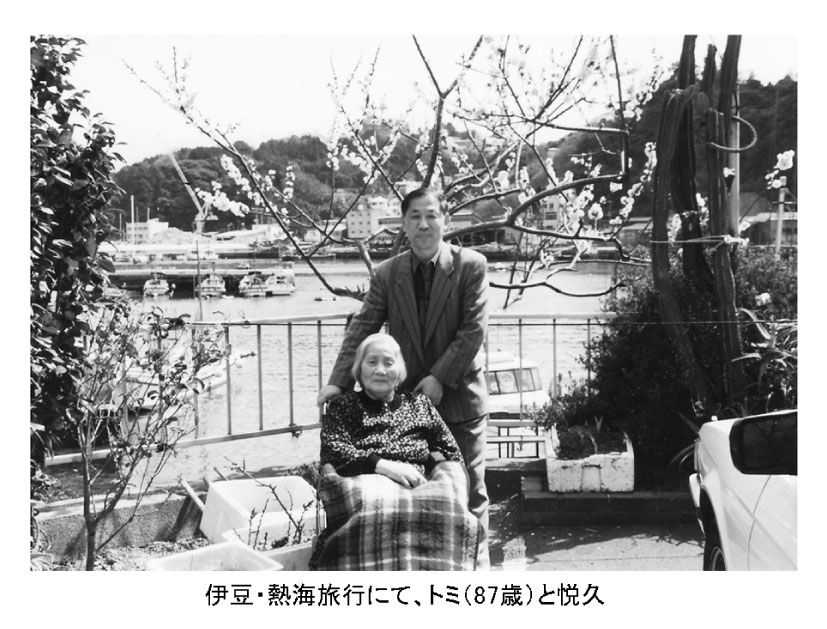
アルバムの中の母
先日、久しぶりに昔のアルバムを開きました。
最初のページには、家の中で、私が三輪車に乗り、欽一が私の肩に手をおき仲の良い写真が貼ってありました。浦和に疎開していた頃で、欽一が１年生、私が５歳のときの写真です。２人とも、にっこりと笑い、着ている服も「お坊ちゃま」という感じで、写っていました。撮り方が上手なのは、きっと團治が撮ってくれたからでしょう。
次のページには、トミと私のツーショットの写真がありました。トミは川のそばにあるボート小屋の長イスに座り、日傘をたたんで膝元に置いています。私はその横で立って、カメラを向けた團治の方を見ています。私が２歳くらいのときの写真です。
同じページには、圭子、欽一、私が、渓谷にかかる橋の下の川でボートに乗っている写真がありましたので、たぶん家族で奥多摩に旅行したときのものだと思います。戦後すぐのことで、日帰り旅行だったのでしょう。
終戦直後の、物資不足の世の中。どこの親も、子どもたちに食べるものを調達するだけで苦労していた時代です。こんなときに家族で旅行をするなんて、我が家は相当、裕福な生活をしていたということです。
ところで、私が幼い頃にトミと一緒に写した写真は、この１枚しか残っていませんでした。写真では、トミのおもしろくなさそうな顔が印象的です。この旅行も、きっといやいやだったのでしょう。トミには「子どもたちを喜ばそう」という発想はなく、いつも自分中心の世界にいました。
アルバムには、浦和の家で撮ったスナップ写真もありました。私が３歳くらいのときで、１枚はトミと、もう１枚は玲子と写っていました。
左ページ下段のトミとの写真は、向かって右側にトミがいて、下を向いてしゃがんでいます。左側の私は、立って左を向いています。つまり、お互いに背中を合わせて、それぞれ別々のことをしている写真でした。
一方、玲子との写真は、お互いに向かい合い、玲子はかっぽう着を着て何か縫い物をしています。玲子はこの頃、15歳。説明しなければ、誰が見ても玲子が私のお母さんだと思うでしょう。
もう１枚。トミの妹である叔母さんと、父のおいっこが来たとき、記念撮影したときの写真もありました。欽一、安是、さらにはお手伝いさんの「ばあや」と「ねえや」も一緒に入っていました。
写真がきらいなトミも、久しぶりに会った四国の叔母に説得されて、やっと写真に入る決意をしたのでしょう。自分の着ている普段着の着物を隠すように、珍しく真新しいかっぽう着を着ていました。
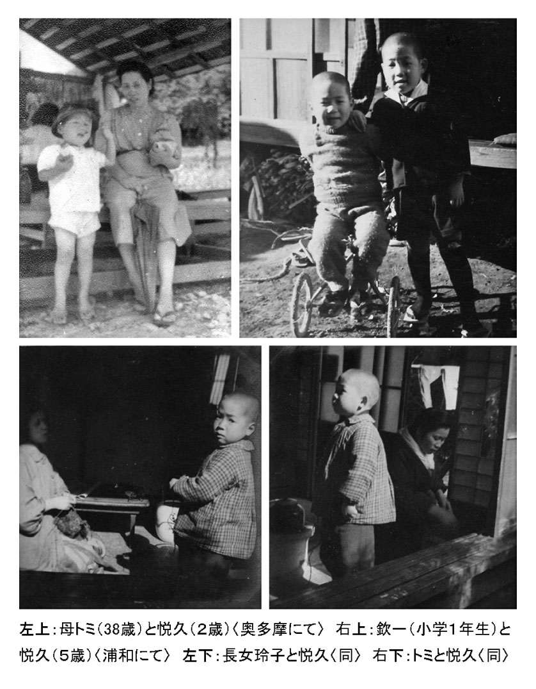
トミが98歳のとき、忘れられない写真が撮れました。とても珍しい、笑顔の写真です。
家の居間で年賀状用に写真を撮ることにしました。
このとき、私はどうしてもトミの笑った顔の写真がほしい、と思っていました。すると、何かおもしろいことがあったらしく、トミがケラケラと笑い始めました。
私は、大あわてで、カメラのシャッターを切りました。この写真は、トミの笑顔の唯一の写真です。
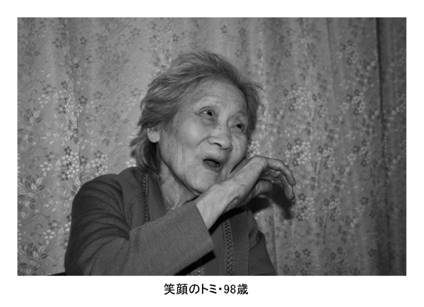
長生きの秘訣
トミは現在、１００歳。人とも会わず、運動もせず、ほとんど家の中だけで生活してきたのに、どうしてここまで長生きできたのか。他のきょうだいに聞けば、みんなそれぞれ違うことを言うと思います。
トミは２度の脳梗塞が影響して、左手足は動きません。転んで大腿骨を骨折もしており、その上98歳のときには硬膜下血腫で２回手術を受けています。それでも、３度の食事はきちんと取っていますし、パンなど手でつかめるものは自分で持って食べています。
会話も最近は筆談が多くなりましたが、身ぶり手ぶりで意思の疎通を図っています。
家内は、トミの耳元で大きな声を出し、それに応えるようにトミも大声を出します。どこか痛むときは大声で「痛い、痛い！」と言いますが、家内は「近所の人に、あそこの家では年寄りを虐待しているのではないかと思われてしまうわ」と苦笑しています。
なぜ長生きできたのか、その秘訣を私なりに考えてみました。
ひとつは、79歳からわが家で生活するようになって、人と会う機会も増えたことが大きいと思います。今では、私たち家族以外の人ともよく話をするようになりました。
また、もともと内臓が丈夫でした。大きな病気や手術に耐えられたのも、そのためでしょう。そして、よく食べます。現在は流動食になり、家内と私がサポートしていますが、いつも完食です。それまでは３度の食事のほかに、おやつも食べていました。せんべいやどら焼きなどは、大好物です。
歯は１本もありませんが、生涯で１度も歯医者に行ったことがないので、入れ歯もありません。歯茎を歯の代わりにして、赤貝の刺し身やさつま揚げなどもよく食べていました。
一日中寝たきりではなく、車イスに座ってテレビを見ていることも、元気の素になっているようです。
テレビ画面に映る人は自分を見ていると思っていることはお話ししましたが、映っている出来事も、自分の家の近くで起こっていると思っているのです。これが、とてもいい刺激になっているようで、先日も、山火事のニュースを見ながら、
「早く消しなさい」
と言いました。元気な「金さん・銀さん」がテレビに出ていたときも、刺激を受けていたようでした。
一時は目がかすんで画面がよく見えなくなり、86歳のときに白内障の手術を受けました。耳が遠くなったあとは、補聴器をいやがって付けていませんので、今はほとんど聞こえません。ですから、画面の字を追いながら声に出して見ています。食事のときも、見ています。
私は教育セミナーなどで、子どもを持つお母さんに、
「食事をしているときは、テレビを消しましょう」
と話しています。しかし、年をとったら、テレビを見ながら食事をすることは、健康にもいいようです。
ときには、「いよいよ認知症が始まったかな」と思うこともありますが、トミが真剣に話をしている姿を見ていると、「そんなこと、ないよな」という気持ちになります。99歳になり、白寿のお祝いをしようと、きょうだいみんなが集まったときも、子どもたちの名前は、ちゃんと言うことができました。ですから、これからもまだまだ、長生きすると思います。
好きなときに起きて、眠くなれば寝る。起きているときはテレビを見る。決して規則正しい生活とはいえませんが、「自分が何とかしなくてはいけない」という緊張感から解放された今、周りの人が何でもしてくれるという安心感が戻ってきました。
やはり生涯、トミはお嬢さまなのです。
トミの日記には、こんな文章があります。
「仏界と云う最高に力強い生命を開くカギは、強情な信心にある事を知った」。そして「私は、毎日幸福です」と。
トミの生命力の強さの源は、この言葉に集約されているようです。
トミと一緒に生活するようになって、今まで知らなかった側面も見ることができるようになりました。
トミの話す言葉に「はっ」とさせられたり、「えっ？」と思ったり。「またか」と思うときもありましたが、そのたびに楽しませてもらいました。その「トミ語録」のいくつかを、紹介しましょう。
●第１話【戦争、やめさせなさい！】
１９９０年に、中東で湾岸戦争が始まったときのことです。連日、テレビで戦況が報告され、そのニュースを見ていたトミが、私に言いました。
「悦久、あの戦争、早く、やめさせなさい」
「え～っ！」
私はそう言ったまま、次の言葉を探しました。トミは、学校の先生なら戦争をやめさせることができる、と思ったようでした。
とても「そんなことできないよ」とは言えず、
「わかった。戦争をやめさせるから、大丈夫だから」
と、言ってしまいました。
●第２話【あんた食べなさい！】
トミは現在、自分の部屋のベッドで生活をしています。食事のときは、リハビリを兼ねて車イスに座り、移動用のテーブルを置きます。右手が使えるので、なるべく食事は自分でするようにしてきました。
ときどき私がトミの部屋に食事を持って行きますが、少しご馳走が並ぶと、自分が手をつける前に、
「これ、あんた食べなさい」
と言うのです。温泉に行ったときみたいに。
「ぼくもお母さんと同じものを食べるから、大丈夫だよ」
と言っても、すぐにはひきません。
「遠慮しないで、食べていいんだよ」
と、まるでトミが自分で食事の用意をしたような口調で言うのです。仕方がないので、少しは口にします。残り物を食べていた習慣は、今も残っているようです。
それから、疲れた顔をしているときに言われる言葉が、
「お前、お金あるのかい」
です。これも昔の習慣が残っているゆえの言葉です。ですから、トミの部屋に入るときは、努めて元気そうな顔をするようにしてきました。
お金には相当苦労をしましたので、今も貧乏な状態が続いていると思っているようです。
●第３話【私は、殺される！】
「誰かいない!?」
トミが叫ぶ声がしました。
「またか」と思いながらも急いで部屋に行くと、少し興奮ぎみに、
「私は、殺される！」
と言いました。
トミの「誰かいない!?」は、よくあることなので驚きませんが、「殺される！」というのは、初めてでした。何か夢でも見たかなと思ってみましたが、そうではありませんでした。
「誰に、殺されるの？」
と聞くと、恐る恐るテレビを指さしました。
テレビでは、サスペンスドラマのようなものをやっていました。私は、ピンときました。
「テレビに映っている人は、ここにはいないんだからね」
と何回教えても、全くわかってくれません。おそらく、テレビの画面で、こちらを向いてピストルを撃った人がいたのでしょう。それで、「殺される！」と思ったのです。
●第４話【お父さん以外の人に、抱かれたことないの！】
トミがわが家に来て５年目の頃。２回目の脳梗塞になり、しばらく入院することになりました。
１回目のときは、手すりがあれば何とか歩くことができましたが、今度は左の手足が不自由になり、歩くことができなくなりました。それでも毎日リハビリはしていました。
何人かのきょうだいが、見舞いに来ているときでした。リハビリをするために、若い男性の介護士さんが、病室にトミを連れに来てくれました。介護士さんは、母をベッドから車イスに移すために、トミを抱きかかえました。
そのときです。
「やめて！ 私は、お父さん以外の人には、抱かれたことはないのよ」
トミは大声で言いました。
一瞬、きょうだいが顔を見合わせました。そのあと、大爆笑です。しかし、トミは真顔でした。トミは、冗談など決して言いません。
それ以来、このことが病院中に知れ渡り、
「やっぱり、欽ちゃんのお母さんは、おもしろい人」
ということになりました。入れ代わり立ち代わり、看護師さんたちが仕事を作っては、トミに会いに来ました。
数日後、欽一が見舞いに来て、手のあいた看護師さんたちは病室の外で記念撮影。
「おもしろい欽ちゃんのお母さん」と言われていたトミは、そのとき、ひとりスヤスヤと眠っていました。
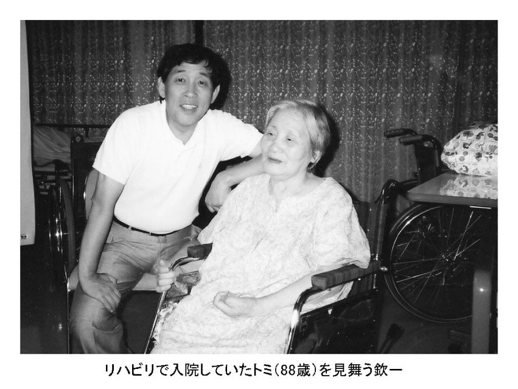
●第５話【〝ヤクザ〟でなく、〝ヤクシャ〟でよかった！】
欽一が、坂上二郎さんと「コント55号」を結成し、テレビの人気者になっていた頃のことです。
「欽ちゃん、〝ヤクザ〟でなく、〝ヤクシャ〟でよかったよ」
久しぶりに欽一に会ったトミは、そうポツリと言いました。
あとがき
たしか、トミが88歳の米寿を迎えたときの「母の日」だったと思います。私のきょうだいや孫、曾孫たちがお祝いに来てくれました。プレゼントをもらい、どんなにかうれしかったと思いますが、トミはただ、うなずくだけでした。
あるとき、トミの部屋で古い菓子箱が積んであるのを見つけました。ほとんどは、どうということのないものばかりでしたが、最後の箱にはボロボロになった大学ノートが入っていました。母の「日記帳」でした。
本文でも少し紹介しましたが、筆まめなトミは、この中にびっしりと字を書いていました。そして、この日記帳は、決して言葉では表すことがなかったトミの喜びの気持ちであふれていました。
父親の存在感のなかった萩本家で、決して人生をあきらめなかったトミ。何があっても人生を楽しんでいたトミ。
大好きな母に、心から、「ありがとう」を言わせてもらいます。
きょうだい６人がみな元気でいることが、きっと母への最高の恩返し。母にも、もっともっと長生きしてほしいし、いつまでも「お嬢さま」でいてほしいと思っています。
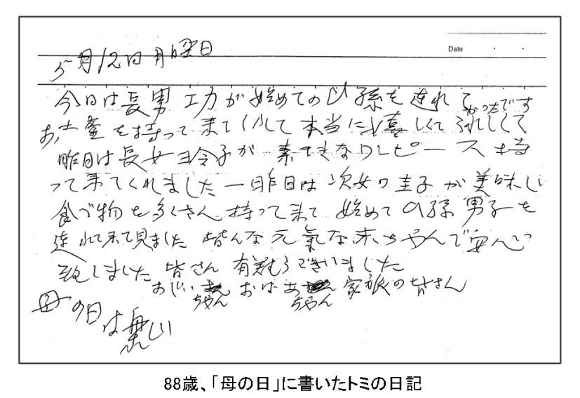
〈著者略歴〉
萩本悦久（はぎもと・よしひさ）
１９４３年、東京生まれ。東京学芸大学卒業。東京・千代田区立番町小学校教諭、東京創価小学校校長を経て、創価大学通信教育部・非常勤講師。また、「子育てアドバイザー」として、全国すべての都道府県で教育講演を行い、千回を超える。
１９７６年８月、旧ソビエト文部省の招待により十日間ソビエト教育交流へ。86年11月、東京都私学代表団の一員として二週間、ヨーロッパ四カ国の教育事情を視察。95年５月、韓国・大邱市・慶熙高校との教育交流に参加。
著書に『体あたり先生奮戦記』（共著：学研）、『ボク、ダメな子じゃないよ』『お母さん、ボク、ほめられたいなあ』『勉強をヤル気にする親・ダメな親』（以上、第三文明社）など。
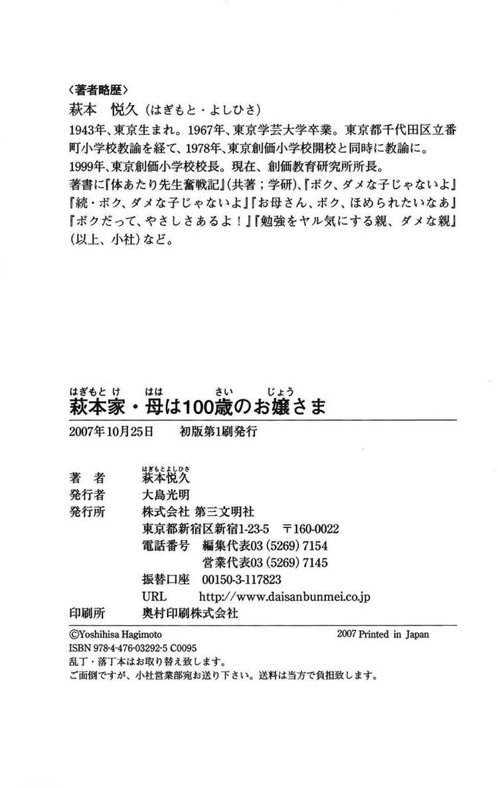
書名 萩本家・母は１００歳のお嬢さま
著者名 萩本悦久
発行者名 大島光明
発行 株式会社 第三文明社
〒１６０‐００２２
東京都新宿区新宿１‐23‐５
ＵＲＬ http://www.daisanbunmei.co.jp/
電話 ０３‐５２６９‐７１４５
著作権 (c)HAGIMOTO Yoshihisa
電子書籍発行日 ２０１３年３月20日
電子書籍制作日 ２０１３年３月１日
電子書籍制作会社 凸版印刷株式会社
底本 ２００７年10月25日発行 初版第１刷
法律で認められた場合を除き、本作品の全部または一部を無断で複製、転載、改竄、公衆送信すること、および有償無償にかかわらず、本データを第三者に譲渡することを禁じます。